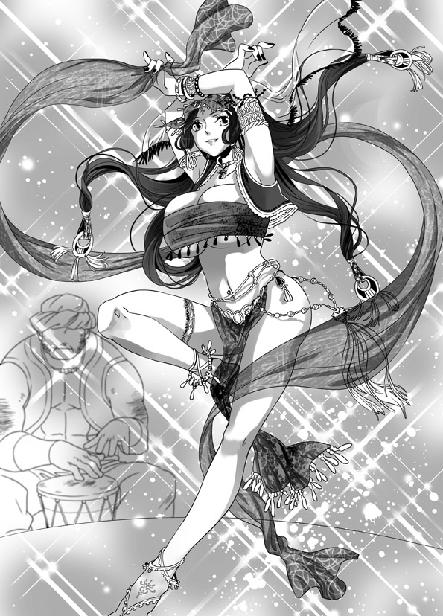
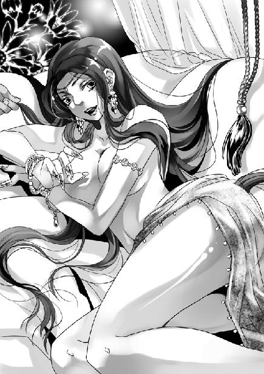

第2集·雪山白湖
序幕篇（2/3）
出版日期：2009-09-11
【本集内容简介】
原本应该飞往上海的程宗扬，莫名其妙地穿越到这个世界。他不但看到了半人半兽的巨人，更目睹了罗马军团与六朝军队的大战，还经历了好友的意外死亡，又撞到两场艳遇。
这个世界用着他所知道的语言文字，有他听说过的历史人物，可参加特洛伊之战的阿伽门侬成了凯撒的儿子，纣王妖艳的宠妃变成了一间商馆的老板，连罗马与汉军的战争这种历史上完全没有出现过的桥段都发生了，这根本就是个颠倒错乱的时空嘛……
※ ※ ※ ※ ※
封面人物：黛姬雪娜

插图：阿姬曼·芭娜

插图：苏妲己
天武营士卒岩石般刚毅的脸上第一次流露出表情。他们抿紧唇，浓黑的眉毛扬起，冷静的目光中仿佛有火焰在烧。
那是经历过无数次血战之后，连血脉也交融在一起的袍泽之情。
戴着板状头冠的指挥官大声发出号令，已经显出颓势的长矛再次凝聚成林，刺向汹涌而来的罗马军团。所有人心中都只有一个念头——即使以生命为代价，也要夺回主将的遗体。
战场另外一侧，是一个醒目的存在。那名女子高高举起韩庚的头颅，手中的弯刀兀自滴下血迹。她身上黑色的袍服已经被烈焰焚毁大半，难以蔽体，烧焦的布料间暴露出大片大片雪白的肌肤，和她衣内的黑色皮甲。
她有着一副足以令人喷血的完美身材。傲人的双峰被一件精致的胸甲紧紧包裹着，黑亮的皮革与如雪的肌肤完美贴在一起，勾勒出乳房饱满浑圆的曲线。胸甲下缘齐腰而止，下面是一段白滑而纤细的腰身。
金发女子修长的颈中戴着一副华贵的珠链，束在腰带下的长裙被火焰烧残，两条颀长的美腿在裙下若隐若现。几滴鲜血溅在她持刀的右手上，裸露的手臂戴着一截坚固的金属腕甲，黑色的雾气在甲上浮动，泛起水状的波纹。在她右臂上，则是一串大大小小的手镯，上面镶嵌着各种珠宝美玉，在阳光下散发出五彩的光芒。
许久以后，程宗扬还记得这一幕。那女子傲然挺起丰颀的娇躯，手中的头颅不住滴下鲜血。她带着一丝近乎冷漠的疯狂，出现在这血腥的战场上，就像一个噬血的香艳魔女。
目睹了韩庚的死亡之后，文泽一瞬间冷静下来，拱手道：“师帅！拜火教祭司现身，须即刻传讯。”
王哲专注地看着那名金发女子，似乎她的出现比罗马军团的统帅阿伽门侬更令人注目。他点了点头，文泽立刻返回帅帐。
阿伽门侬的黄金头盔滚到一边，他狼狈地爬起身，手指微微发抖。无论他如何高贵和傲慢，面对死亡的时刻仍像一个农夫那样恐惧。在他面前，直径百米以内仿佛被烈火焚烧过，青翠的草原尽成焦土，场中伏尸处处，其中一半都是他身旁的精锐。这些从亚平宁半岛就一直跟随着他的百战精英，竟然被一名汉军将领一举击杀。
“黛姬雪娜！”阿伽门侬吼道：“你不是说过他们是一支拼凑的军队，都是由农夫组成，连波斯的黑衣骑兵也可以轻易战胜吗？”
金发女子慢慢转过身，冷漠的脸上流露出一丝奇怪的笑意。
“是的，我的主人。”她语调轻柔地说道：“他们是由六个异教徒诸侯组成的联军，我敢保证，在他们的军队里，没有一个贵族。”
“为什么这些农夫能够对抗我们的勇士！”
黛姬雪娜声音愈发轻柔，“我的主人，你看到那些持矛的战士了吗？他们来自秦国。为了一个人的召唤，他们放下农具，离开家乡，在战场中学会了使用长矛。那些使用陌刀的军人来自唐国，使用弓弩的军人来自宋国。他们都是为了一个人的召唤，才来到这里。”
“他是谁？”
黛姬雪娜提起韩庚的首级，“就是他的师父，大汉左武卫大将军，王哲。”
“王哲？”
黛姬雪娜柔声道：“成为军人之前，他还有一个名字，叫王紫阳。那时候他是太乙真宗的掌教，人们称他紫阳真人。”
阿伽门侬倒抽一口凉气，手指紧紧勾着，恨不得掐死她。他咆哮道：“他就是你们说的大汉第一高手，太阳的化身王紫阳！为什么你要欺骗我！要知道，你是在欺骗罗马元老院！欺骗帝国！”
黛姬雪娜湖水般碧蓝的眼波一转，嫣然笑道：“尊敬的主人，你已经杀了他最好的弟子。如果你能杀死王哲，那将是一桩永远不会朽去的功勋。否则……”
阿伽门侬脸颊的肌肉微微抽动着，然后对着自己的战士吼道：“冲上去！杀死他们！不许让任何人逃脱！”
※ ※ ※ ※ ※
天策营的唐军已经摧毁了第六军团两列方阵，与最后一列方阵厮杀在一起。那些罗马军团的老兵从迦太基一直征战到帕提亚高原，还是第一次遇到如此强劲的对手。他们已经拼红了眼睛，一边发出战斗的狂吼，一边不顾一切地冲向敌人的刀墙，显示出罗马战士惊人的勇敢和顽强。
第十二军团“掷闪电者”在歼灭两个天武营的秦军方阵之后，被其余四个方阵死死挡住，已经无力支援侧翼的第六军团。由高卢人组成的第五军团“云雀”也在天霁营神臂弓毁灭性的射击下损失惨重。而此时，那些纸甲的军士再次举起弩弓，紧盯着任何踏入射击半径的罗马战士，阻挡了他们的脚步。
阿伽门侬还剩下两个完整的军团，第三军团“奥古斯塔”以及他父亲最珍爱的军团，第十军团“骑士”。对面的汉军还剩下七千人，如果全军压上，阿伽门侬相信胜利会属于罗马。但付出的代价，也许是五个主力军团悉数重创，全部丧失战斗力。
阿伽门侬无法承担战败的后果，同样，他也无法承担军团主力全部损失的责任。无论撤退还是进攻，他的结局似乎都已经注定。阿伽门侬终于开始后悔这一次轻率的战争，但他已经没有选择。
号称“钢铁之壁”的第六军团已经无力阻挡天策营的攻势，连最后一列老兵方阵也开始动摇。穿着明光铠的唐国军人并肩而立，他们粗壮的手臂排列如林，手中拥有七尺长刃的陌刀组成一道刀墙，雪亮的刀光上下翻飞，将罗马战士的盾牌和肢体绞得粉碎。
这时如果退缩，失败的恐惧会迅速蔓延，一旦阵形溃散，奔逃的士兵会冲散剩余的两个完整军团，并且把自己的后背暴露给这些可怕的敌人。到那时，他们唯一的结局就是被全部歼灭。
以防守强悍著称的第六军团“钢铁之壁”已经面临生死关头，天策营的唐军正一点点吞噬着他们钢铁铸成的壁垒，崩溃就在眼前。
一名浑身浴血的百夫长发出最后一声战吼，然后挺直胸膛，奋力将象征军团荣耀的鹰帜掷向前方。黄铜铸成的旗帜在空中画过一条耀眼的弧线，远远落在唐军的队列中。
这是最后的赌博。鹰帜是军团的标志，一旦失去鹰帜，军团将不复存在。掌旗的百夫长投出鹰帜的一刻，就是在用整个军团的鲜血写下他们的选择——要么胜利！要么灭亡！
望着飞出的鹰帜，所有还幸存的第六军团战士同时发出震天的战吼，奋不顾身地朝象征着军团荣耀的鹰帜冲去。那些手执短剑的罗马士兵，用自己的血肉之躯撞向敌军的刀锋。在他们惊人的英勇下，唐军所向披靡的攻势被阻缓，却仍然一步步逼近第六军团的防御底线。
就在此时，统帅的命令下达，第三军团“奥古斯塔”与第十军团“骑士”同时进入战场。一万两千名生力军的加入，终于挽救了岌岌可危的第六军团。
唐军的陌刀一次次从对手的肢体上卷过，那些身材魁梧的汉子屠杀着对手，自己也被飞掷的标枪和右侧突袭来的短剑击中。三个军团的碰撞阻挡了彼此的脚步，双方在僵持中陷入苦斗。陌刀与短剑往来交错，胜利的天平在两者之间不断摇摆。
血腥的战场中，唯一还能保持从容的是天霁营。弩弦震动的声音不断响起，箭矢犹如一片死亡的阴云在战场上空飞翔。天霁营的宋国军人几乎没有移动，就控制了半个战场，千余张神臂弓张开一幅难以逾越的死亡之幕，他们以近乎艺术的优雅与准确掠夺着对手的生命。在神臂弓的威慑下，天武、天策两营的右翼安若磐石。
战斗已经持续了将近一个时辰，阿伽门侬投入了五个主力军团，王哲也押上了他的全部力量。左武第一军团一万余名将士与三万罗马精锐在这片草原上奋力厮杀。
失去爱徒的王哲沉静如水。他没有发出太多指令，这些已经追随他十五年的六朝军人经历过无数次血战，对战争的直觉，使各级指挥官们在瞬息万变的战场上，近乎本能地作出最佳选择。
面对新投入的两个军团，天策营的唐国军人不再向前猛攻，而是转向右侧，强行突破罗马军团的拦截，与天武营的秦军汇合在一起，依靠天霁营宋军的神臂弓反复消耗着对手的力量。
当天武与天策二营在战场中部会师，胜利的天平开始向左武军一方倾斜。山丘上，秦军的轻骑已经开始集结。那些勇猛的汉子抛去所有甲胄，只携带长剑和用于投掷的短矛，准备向敌军投去致命的一击。
文泽从帅帐出来，他似乎耗费了大量精力，脸色苍白得毫无血色。
文泽肃容向主帅拱手，嘶哑着声音道：“已经传讯。”
黛姬雪娜的身影已经从敌军中消失，仿佛她从来没有出现过。王哲的目光缓缓扫过战场，然后摊开手掌。
身后的亲卫上前一步，双手捧起一张褚红的长弓，递到主帅手中。王哲左手握住弓身，右手微扬，一支赤红的箭矢从箭匣跳出，落在指尖。王哲拉开弓弦，长弓弯成满月，一道光亮仿佛从他手中沿着箭矢流到箭锋处，凝聚成一团耀眼的白光。然后他手指一松，箭矢仿佛一点流星，笔直飞过纷乱的战场。
王哲的帅帐距离阿伽门侬将近三里，任何弓箭，甚至程宗扬所在世界的枪支都不可能拥有这样的射程。但王哲手中的箭矢却仿佛无视空间的距离，瞬间越过整个战场，飞向阵后一顶皮帐。
将近五万人的战场上，那顶普普通通的帐篷就像海中一粒细砂，毫不起眼。箭矢没入厚厚的皮革，整座帐篷像被利刃绞碎般猛然碎裂！帐内一个黑色的身影来不及闪避，就被箭矢从肩头贯入，巨大的冲击力使她整个人都被带得飞出，黑色的罩帽掉落下来，露出女祭司金黄的秀发。
黛姬雪娜按住肩膀，碧蓝的眸子冷冷盯着山丘上的王哲，一手将入体的箭矢硬生生拔出，折成两段，然后昏迷过去。
阿伽门侬大声呼喊着，周围的卫士再度聚拢过来，将他重重挡住。
王哲一箭重创对手，他放下彤弓，问道：“月霜如何？”
“师帅！”月霜从帐内出来，拽住一匹战马的缰绳，“我也要去！”
她脸色已经好了许多，虽然体内的寒毒已被压制下去，但无论如何也不可能再施展出刚才那超越自身修为的力量。
王哲头也不回地一口拒绝，“不行。”
“可是韩师哥……”月霜眼圈一红，掉下泪来，泣声道：“我要给师哥报仇……”
王哲命令道：“下了她的剑。”
一名亲卫过来，取走月霜的佩剑。文泽低声解释，“罗马军虽是强弩之末，我军也难有余力。天武营损失七成，天策营也只剩半数能战之士。适才天霁营来报，一个时辰内消耗箭矢十二万支，眼下只剩不到一万支箭矢。此役胜负还在五五之间，你即使上阵也改变不了局势，还使得师帅分神……”
王哲没有理会月霜，而是看着旁边的程宗扬，忽然道：“夫以身融万物，以丹田为鼎炉，积精化气，炼气合神。”
月霜一出现，程宗扬本能地退了半步。他这会儿身上难受无比，随着战场中的厮杀越发惨烈，身体的不适就越明显。额角炙痛，胸口烦闷欲呕，与刚穿越来时的情形类似。听到王哲的话，程宗扬心头顿时一动。这段字句他已经熟极而流，正是王哲传他的口诀，说的是将身体与天地万物融为一体，依靠丹田来吸收炼化天地与自身的精气。
程宗扬试着将意念转移到丹田内，那只小小的气轮立即旋转起来。从太阳穴透来的死亡气息化为一条条纤细入微的无形丝线，被旋转的气轮吸纳。胸口的烦闷感渐渐消散，变成一种温暖的轻松感，使他禁不住闭上眼，舒服得想要睡去。
王哲低叹一声，一指点在程宗扬眉心，将他唤醒。这年轻人终究没有学过修炼的方法，不知道要用顽强的毅力克服心魔，保持灵台一点清明。如果程宗扬就此睡去，这会儿吸收的真气就等于白练了，更为严重的是很可能从此不再醒来，成为废人。
程宗扬茫然不知自己遭遇的险境，睁开眼睛，丹田的气轮还在旋转，虽然慢了一些，但仍不断吸收着奇异的气息，以无法察觉的速度渐渐变大。
月霜已经收了泪，但仍是一副泫然欲泣的模样。此时罗马最先投入战场的三个军团——与天武营秦军交锋的第十二军团，与天策营唐军对阵的第六军团，与天霁营宋军交战的第五军团——已经被彻底打残。五个军团总共的损失超过一万人。
而左武第一军团付出的代价也惨重之极，除天霁营还大致保持完整，天策、天武二营伤亡超过六成，已经负伤退出战斗的战士也不得不重新上阵。
这时已经没有人再敢踏入天霁营的射击半径，罗马的桦木盾牌根本无法抵抗神臂弓的杀伤。再勇敢的战士一旦看到他们短小的弩弓，也丧失了冲锋的勇气。
终于，天霁营的士兵开始移动，以严密的阵形缓慢前进，往战场中央靠拢。一旦他们与天武、天策二营会合，射程将覆盖整个战场。
就在这时，一声青铜的号角，从背后远远传来。王哲猛然扭头，望向身后。
一排奇特的森林出现在远处的地平线上。那是无数长矛组成的方阵，随着方阵的前进，长矛越来越高，却始终看不到持矛的战士。
在六朝联军中，秦国士卒使用的七米重矛已经是单兵武器的巅峰。在正面交锋中，没有任何一支军队能够攻破他们的矛阵，即使唐国的陌刀大阵也不能。而这一支新出现的军队，使用的长矛甚至超过了秦军重矛，长度达到七米二。
看到地平线上出现的长矛密林，阿伽门侬猛地松了口气，接着两腿一软，坐倒在地，再也无力站起身来。大神朱庇特！战神阿瑞斯！伟大的盖乌斯·尤利乌斯·凯撒！感谢万神殿里庇护帝国的无数神明！他们终于来了！
王哲的目光落在程宗扬身上。程宗扬张大嘴巴，像傻掉一样看着那座移动的森林。
那是一个巨大的方阵，二百五十六名士兵一字排开，形成一道半里长的密集战线。方阵纵深达十六列，仅仅一个方阵，人数就超过四千。他们披着长长的斗篷，长矛扛在肩上，左手提着一面巨大的方盾。在方盾右上方，开着一个月亮形的圆孔，一旦进入战场，他们就会将方盾并列起来，把长矛从圆孔伸出，来攻击对手。
程宗扬揉了揉发僵的脸颊，穿越到这个世界之后，他已经有过太多的惊奇，但眼前的一切，仍给了他重重一击。
马其顿军团，古代欧洲最优秀的阵列步兵，在平坦的地形中，他们的矛阵几乎是不可能被击败的。
王哲意识到自己失去了一个良机。如果他不是为了等待罗马军团力竭的最佳时机，更早一些将秦军轻骑投入战场，也许正面的罗马军团已经溃败，心胆已寒的阿伽门侬将被迫退出战场。这时赢得喘息机会的左武第一军团完全可以回师列阵，凭借山丘的地形，居高临下抵抗来军。
他一眼就看出这支陌生军队的弱点：与秦军方阵相比，马其顿军团的方阵规模更为庞大，阵形更为密集，而灵活性远不及秦军的小型方阵，对地形的要求更为苛刻——一片丛林，或者一座山丘，就可能对他们的阵形造成致命后果。但他现在已经无法选择战场。
马其顿军团的出现，在已经失去平衡的天平上，重重投下一个砝码。疲惫的罗马战士再次发出战吼，触手可及的胜利使他们的战意鼓舞到顶点。
而始终保持沉默的兽蛮武士也骚动起来。沉默许久的古格尔终于举起战斧，戴着铜环的右臂用力向前一挥，两千余名已经被鲜血染红眼睛的兽蛮武士立即咆哮着投向战场。
文泽双手相揖，宽大的长袖并在一起，向王哲躬身施礼，平静地说道：“师帅，我军败绩。”
王哲轻抚着腕上的皮甲，说道：“左武第一军团成军有十五年了吧？一共打过多少仗？”
文泽道：“大小战役四十七次。”
“这么多了啊。”王哲低叹一声，然后挺起胸膛，“一共败过几次？”
文泽道：“这是第一次。”
王哲一笑，“我们败得起吗？”
文泽摇头道：“不能。我军若是败退，他们会趁势东进，有熟知地形的兽蛮人带领，不出一月，就将兵临隘口，威胁五原城。”
王哲淡淡道：“我这一死，朝中几位大臣终该满意了吧。”
文泽忽然激动起来，“师帅！我军上下一心，即使败亡也定可重创敌军。只要师帅返回，只需要一年又可组织一支强军，与我等雪恨！”
“谈何容易。六朝精锐尽在于此，再建一军又需多少时日？”王哲低叹道：“我五十投军，至今已十五年，哪里还有另一个十五年呢？”
“师帅！”
王哲道：“不必多说。传我号令，命轻骑冲阵，以五百骑为一队，全力攻击敌军帅帐。天霁营撤回山丘，天策营阻敌，天武营退出战场。身中一伤者各自编入军中，操刀持矛与敌交锋。身中二伤者编入天霁营，为射手装弩。”
这是要死战了。程宗扬心头一阵紧张。不过即使王哲不说他也知道，马其顿军团出现后，这支孤军想要突围已经成为幻想。最近的城塞距离此地大概有一千余里，在这样既无隐蔽又无法坚守的大草原，撤退就意味着丧失所有主动，在未来的一个月内，遭受敌军在背后无穷无尽的追击，随时都可能覆亡。即使侥幸逃生，也将百不存一。
※ ※ ※ ※ ※
左武第一军团的帅旗在风中飘扬，所有士卒从上到下都保持着沉默，似乎无视死亡的来临。
根据王哲的命令，天武营撤回山丘休整，受伤的战士重新拿起武器，加入阵列。天策营在山丘下摆出一个半圆形的却月阵，开始防守。而秦军轻骑则从阵前突出，宛如一支箭矢，破开围攻的罗马士兵，直冲阵后。
为了保持阵形，马其顿军团前进十分缓慢。以他们的速度，投入战场还需要三十分钟，战局重新陷入僵持。
王哲转身说道：“月霜。”
月霜惊喜地跳起来，“师帅！我一定把敌将的首级给师父拿来！”
王哲脸上露出一丝怜爱，他拂好月霜脸上散乱的发丝，然后道：“你立刻跟他走，以最快的速度回到内陆。但不要去临安，到唐国的长安去。”
月霜一怔，“为什么？”
“因为你不该上战场。”王哲淡淡说完，然后转头看着程宗扬，“月霜就交给你了。”
程宗扬还未作声，月霜就愤然道：“我不跟他走！我要上阵杀敌！这个无耻小人，我——我杀了你！”
昨晚羞于启齿的遭遇，月霜已经忍了很久，此时师父居然让她跟这个混蛋走，月霜再也按捺不住，说着从一名亲卫腰间拔出长剑，朝程宗扬劈来。
程宗扬吓得魂飞魄散，王哲信手伸出两指，挟住剑身，轻巧地将长剑夺在手中，然后剑柄一撞，封了月霜的穴道。
“你的伤势只有他能治好。”王哲神情严肃地说道：“记住，到唐国去，找李药师。”
文泽命人牵来两匹最好的战马，备好清水、食物、弩矢、长剑，以及一袋钱币，然后将月霜放在鞍上，交给程宗扬。他这一切都做得十分平静从容，似乎不是即将赴死，而是在筹备一次远游。
月霜瞪大眼睛，满眼都是愤怒和不甘。程宗扬却看着惨烈的战场，感觉身体像虚脱般无力。
无数人影在战场上拼杀，鲜血和残缺的肢体不住飞起，连阳光也被飞溅的鲜血染红。他不知道这场恶战之后，会有多少人活下来，更不知道自己能不能有命离开。
王哲道：“再过两刻敌军才能合围。离开这里，一直向东南方向走。”
程宗扬忍住胸口作呕的烦闷感，勉强点了点头。
“记住那三件事。”王哲双手一拱，郑重说道：“拜托。”
程宗扬与他认识虽然仅仅一天，但对于这个唯一知道自己来历的师帅，有着难解的亲切感。此时见他向自己这个无名小卒施礼，程宗扬心头一热，“请师帅放心！宗扬一定不负师帅所托！”
程宗扬吃力地爬上马鞍，将那匹空马的缰绳系在鞍侧，然后扶住月霜，忍不住回头看了一眼那位穿着甲胄的统帅。
究竟是什么支撑着他们？让他们毫不畏惧死亡呢？是勇气还是责任感？
程宗扬无法理解他们的情怀。也许这些生活在古典时代的人都是白痴，也许他们有着另外的生存维度。一个更高的维度。
就在这时，他听到王哲的声音：“到清远去。在清江江畔的玄真观，拆开锦囊。”
※ ※ ※ ※ ※
血腥的战场被抛在身后，喊杀声越来越远。有过两次骑马的经验，程宗扬渐渐掌握了骑乘的方法，身体随着马匹的奔跑而起落，不再像以前一样手足无措。
驰出十余里后，马其顿军团的方阵终于逼近到山丘下。休整过的天武营士卒重新起立，仅存的秦军只能编成两个方阵，他们互为犄角，以长对长，凝视着缓缓靠近的敌军，没有一个人退却，也无路可退。
一缕苍凉的歌声响起：“岂曰无衣，与子同袍！”
然后更多的歌声应和相呼。
“岂曰无衣，与子同袍！王于兴师，修我戈矛！与子同仇！岂曰无衣？与子同泽！王于兴师，修我矛戟！与子偕作！岂曰无衣？与子同裳！王于兴师，修我甲兵！与子偕行！”
秦军的《无衣》唱罢，天策营唐军的《燕歌行》响起。
“汉家烟尘在东北，汉将辞家破残贼。男儿本自重横行，天子非常赐颜色。摐金伐鼓下榆关，旌旆逶迤碣石间。校尉羽书飞瀚海，单于猎火照狼山……”
秦军的歌声一如他们的重矛黑甲，古朴苍凉，唐军的歌声则如同他们光彩夺目的明光铠与陌刀一样豪迈昂扬。
立在山丘上的天霁营宋军，则唱起了另一首著名的诗词。
“怒发冲冠，凭栏处、潇潇雨歇。抬望眼，仰天长啸，壮怀激烈。三十功名尘与土，八千里路云和月。莫等闲、白了少年头，空悲切。靖康耻，犹未雪！臣子恨，何时灭！驾长车，踏破贺兰山缺。壮志饥餐胡虏肉，笑谈渴饮匈奴血……”
随着歌声，左武第一军团的将士们义无反顾地冲向罗马军团、马其顿方阵以及兽蛮武士的联军。
在这个血腥的日子，宁静的草原被鲜血染红，连绵的山丘间，那个月牙状的平原成为血肉的池沼。
无论是罗马还是六朝诸侯组成的汉军，所有还活着的人都绞杀在一起。战车倾覆过来，长矛断折，垂死的战马发出悲鸣，蒙着羊皮的盾牌溅满鲜血……
一名兽蛮人奋力砍下战车上戈手的头颅，身后一柄宽长的陌刀随即劈入他的背脊。握着罗马短剑的战士本能地右刺，将剑锋狠狠捅进持刀大汉的右肋，自己又被一支长矛刺穿腹部。
到处是鲜血和杀戮。苍青色的天穹下，死亡之神在冥冥中张开双翼，拥住这片沥血的白骨之野。
仅存的汉军被压迫到中军的山丘周围，还能够战斗的不足千人。而被他们搏杀的敌军超过两万人，连绵数里的战场中布满了茫茫尸骨。
天霁营所有的弩矢已经射尽，弩手们拔出短刀，开始砍碎手中那一张张精巧绝伦的神臂弓。留在山丘上的帅帐卫士们则一匹匹亲手杀死自己的坐骑，毁掉所有能被敌军缴获的物品。
战斗接近尾声，这支深入草原的孤军已经走到自己的尽头，仅存的军士都被围到山丘上，罗马战士投来的标枪几乎刺到帅帐。而左武第一军团的帅旗仍然高高飘扬，还有旗下那个磐石般的身影。
文泽系紧高冠，理好衣物，然后跪下来，端端正正向故乡所在的位置行礼。
王哲笑道：“想家了吗？”
文泽道：“在外十余年，未能在家中侍奉母亲，心下不安。好在还有兄长代为尽孝，此去泉台也可放心了。”
王哲忽然解下甲胄，随手扔在地上，一边活动着双肩，一边叹道：“这身甲衣穿了十几年，还是不习惯，今日终于可以脱了。”
文泽笑道：“师帅这件道袍属下已经许久未曾见过了。”
王哲注视着聚拢过来的敌军，淡淡道：“其实我应该悠游林下，修真炼气，不该是一个血染双手的将军。”
文泽向王哲施礼道：“属下不能再随师帅征战左右，先走一步了。”说完，他用一柄短刀切开了自己的喉咙。
王哲悠悠长叹一声。
程宗扬已经驰出数十里，不绝于耳的厮杀声已经远去，那座无数战士为之浴血的山丘也成为一个小小的黑点，隐约还有无数蝼蚁般细微的身影。
忽然一个身影冲天而起，白鹤般掠上高空。
程宗扬情不自禁地勒住马匹，转身朝天际望去。
那是王哲。这位左武卫大将军、太乙掌教脱去甲胄，只剩下身上天青色的道袍和一顶金冠，犹如君临天下的神明，升上晴空。
奋战的士兵们停下手，惊讶地看着这个神一般的男子，甚至忘了进攻。
王哲笔直飞上百余丈的高空，青色道袍在天风的激荡下猎猎飞舞。他双臂微抬，拇指扣住中指，然后长啸一声，声如龙吟，震撼了整个战场。接着他头顶的金冠猛然爆开，散为无数流星，黑色的头发在脸侧盘旋飞舞。
王哲双掌一并，双手食指立起，其余四指交叉相握，喝道：“临！”
一点光亮从他右手食指的商阳穴淌出，沿合谷、阳溪、下廉、曲池、巨骨……一闪掠过手阳明经诸处穴道，流到胸前。
王哲拇指一挺，笔直贴在一起，中指同时分开，叠在食指上。
“兵！”
又一点光亮从他左手小指少泽穴淌出，从后溪、阳谷、小海、肩贞、秉风、天容……沿手太阳经络流到胸口。
王哲双掌一错，无名指、中指、拇指向上挑起，小指、食指交握。
“斗！”
同样的光亮从他右足足窍阴涌出，从侠溪、阳交、阳辅、阳陵、风市、环跳诸穴，沿足少阳经络升到腹部。
王哲再次结出手印，食指、拇指直立，其余三指下勾，并在一起。
“者！”
这一次是足太阳经，从至阴、金门、飞扬、合阳、委中、委阳、秩边诸穴，直到腹部。
王哲双手如鲜花怒放，不断翻结出各种手印，长声喝道：“皆！”
“阵！”
“列！”
“前！”
王哲每一声大喝，都有一点光亮应声而出，从他手少阳、手阳明、手太阳、足少阳、足阳明、足太阳六道经络一一运转经行，分别汇入胸腹，接着是阳跻、阳维二脉。一共八只光球齐聚体内，宛如八只光明夺目的太阳。
王哲的九阳神功只练到八阳的境界，已经是太乙真宗二百年来第一人。如果韩庚不死，再过三十年，很可能冲上八阳，甚至九阳的至高境地。
王哲悬空虚立，如履平地，他面沉如水，长发猎猎飞舞，身上光芒大作，宛如神明天降。他十指虚扣，仿佛握着一只太极球，然后沉声喝道：“行！”
一点光明从他腹中浮现，然后分为两处，分别沿任脉、督脉旋转盘升，连同少阳、阳明、太阳六经与阳踏、阳维二脉，在唇下相交，重新汇入腹内的胞中。这团光球汇集了六条阳经两条阳脉，光芒分外明亮。凝聚了王哲毕生修为的八颗光球一一汇入其中，最后九阳合一，仿佛一只日轮在胸腹间旋转扩张，即将突破肉体的限制，喷薄而出。
阿伽门侬惊恐地勒住战马，耳边仿佛又响起黛姬雪娜诅咒般的尖叫：“是太阳！毁灭一切的太阳之火！”
他终于见到一轮太阳的诞生。即使隔着百丈高空，身边的温度仍急剧攀升，他麾下罗马战士的黄铜头盔被照得一片光明，似乎正在烈日下融化，变成燃烧的液体。
九阳齐出，几乎是每个修道者梦寐以求的境界。但只有王哲自己清楚，他配合九字真言，激发体内所有的真元阳气，凝出九阳，却无法控制。他的修为并不足以操控九阳，他还未修炼至极致的肉身更不足以承载九阳的巨大力量。九阳齐出的一刻，也就是他肉身消陨的一刻。
王哲猛然张开双臂，喝道：“极！”
刹那间，他的身体化成一团耀眼的光芒，强烈的光辉甚至掩盖了阳光，以雷霆万钧之势奔向草原，将整个战场笼罩其中，形成一个方圆十里的巨大光球。
※ ※ ※ ※ ※
光明闪过，大地仿佛陷入黑暗。
喧嚣的战场一瞬间变得沉寂。青翠的草原、折断的长矛、染血的盾牌、倒伏的尸骨，还有双方厮杀的勇士们，都仿佛被那团光明彻底吞噬，刹那间消失得无影无踪，连大地也为之龟裂，形成一片直径达到十里的焦黑色墓场。
圆形边缘，茂密的青草被高温炙干，然后燃烧起来，升起一片高达丈许的火焰。这片火焰以疾逾奔马的速度四处扩散，程宗扬不得不竭力驱赶坐骑，与身后的烈火赛跑。
一场突如其来的大雨夹在狂风中席卷而至，终于浇熄了大火，也掩盖了天地的一切。
程宗扬不停地打马狂奔，心里只有一个念头：离开！远远离开这片只有死亡的土地！
被封住穴道的月霜伏在鞍上，她同时目睹了那刻骨铭心的一幕，却无法挣扎，无法喊叫，无法和那些亲如手足的同袍一样化为永不磨灭的英魂。
闪电中，程宗扬看到她雪白的面孔，上面湿淋淋的，不知是雨是泪。
程宗扬抽出一条羊皮袍，盖住月霜的头脸，牙关战栗着吼道：“你可别冻死了！”
这鬼天气，一会儿烈日高照，一会儿又暴雨倾盆。程宗扬浑身上下都被暴雨浇透，手脚冰凉，如果不是丹田中那只气轮还不断透出暖意，他可能已经在雨中被冻僵了。他一边打马奔驰，一边奋力催发着丹田中的真阳，丝毫不管它消耗了多少。
程宗扬不知道，自己身上那个莫名其妙的生死根今天已经吸收了太多的死亡气息。在他驰离山丘的一刻，双方战死的士卒已经超过万数，这些死者的气息经过生死根的转化，变成生机无限的真阳。如果是一个修行多年的术者，一次获得这样多的真阳定然大喜过望，离开的第一件事就是觅地清修，将吸收的真阳转化为自身的真元。
但程宗扬狗屁不懂，一口气塞给他过万条性命，唯一的下场就是被过多的真阳爆体而死。他在雨中一路狂奔，多少人求之不得的真阳，都被他毫不吝啬地挥发掉。就像一个猿人来到现代世界，把大捆大捆的钞票扔到火堆中取暖，足以让任何有识之士看得眼中冒火。
奔驰一夜之后，不幸的是，程宗扬吸收的真阳已经平白浪费掉大半，幸运的是，由于真阳消耗，经脉没有因为不堪重负而径行碎裂。
程宗扬现在还对这些一无所知，当他看到第一道黎明的光线在左前方的地平线升起时，终于松了口气。程宗扬挣扎着翻下马背，腿间传来一阵血肉黏连的剧痛，大腿内侧已经被磨出两块手掌大的伤口。
程宗扬吃力地把月霜抱下马，然后倒在地上，陷入昏睡。
※ ※ ※ ※ ※
喉头传来一点微痒，程宗扬扭了扭头，继续呼呼大睡。
接着喉头又是一痒，还有些冰凉的寒意。程宗扬再次扭头，希望那只不识趣的蚊子能自己飞走。
喉头又是一凉，程宗扬勃然大怒，一掌拍到颈中。那只蚊子一下飞开，却与他的尾指划了一下。
“啊！”
程宗扬惨叫着握住滴血的手指。
月霜举剑指着他的喉咙，剑锋还有一滴血迹。她几次把剑放在程宗扬喉头，可这个无耻小人比一头猪还能睡。月霜虽然恨程宗扬入骨，但她认为行事要光明磊落，趁人睡梦中一剑杀死，不算好汉。就算死，也应该让这混蛋死个明白。
程宗扬捏住流血的手指，警报的红灯在心头一个劲儿地乱闪。这会儿不用再指望别人来救了，他敢肯定，周围百余里内，除了他们两个绝对没有一个活人。
月霜咬着牙，低声道：“无耻小人！你辱我清白，现在还有什么话说！”
“有！”程宗扬大声叫道：“是我把你救出来的！”
月霜愤怒地说道：“我宁愿和他们一起战死！谁让你来救我！”
“可我还救过你两次！”
月霜咬牙道：“你放心！杀了你，我就会找那些罗马人，到那时如果我杀不掉他们，就会被他们杀死。如果能杀光他们，我就会自尽。反正不会活着回来，算是抵了你的命。”
这算是什么抵命？程宗扬再一次深刻认识到，女人是一种没有逻辑的动物。她们只会凭自己心意随便找一些理由，来达到她们横蛮无理的目的。
“等等！你知道杀死师帅的是谁吗？是阿伽门侬！凯撒的长子！”
我呸！阿伽门侬是传说中迈锡尼的国王，比凯撒早了一千多年，怎么会变成他的儿子？
月霜寒声道：“他们在哪里？”
“罗马！往西走，先经过波斯、尼尼微，底格里斯与幼发拉底河，然后到大马士革，再从君士坦丁堡经过地中海、希腊，才到亚平宁半岛。如果凯撒出巡，你还要去伽太基、高卢、埃及、冰岛、格陵兰、夏威夷、复活节岛……”
程宗扬把自己知道的地名胡乱扔出一堆，叫道：“那些地方你都没去过，如果杀了我，你一辈子都找不到！”
月霜冷冰冰道：“那我就找一辈子！”
她说着举剑欲刺，程宗扬连忙叫道：“停！你不能杀我！”
“凭什么不能？”
“是师帅！”程宗扬终于找到了救命的稻草，“他留下遗命，让我去做几件事！”
月霜切齿道：“师帅怎会让你这卑鄙、无耻、下流、无能、贪生怕死的小人做事！”
“你也听见了！当时师帅还说：拜托！”
那句话月霜确实听到了，但她不明白王哲会有什么事情要拜托这个小人。
“告诉我是什么事，我替师帅去做。”
我有那么蠢吗？说出来好让你把我杀掉？程宗扬抿紧嘴巴，摆出一副视死如归的壮烈之态。
月霜越看越怒，“啪”地给了他一个耳光，“小人！”
程宗扬一阵光火，自己从小到大还没被女人打过，到了这个世界居然被一个死丫头打了几次。他唇角露出一丝挑衅的笑容，“我很小吗？对你来说，应该是挺大的吧！”
月霜雪白的脸颊一下涨得通红，她猛然伸出左手，一把扼住程宗扬的喉咙。程宗扬身上保留的真阳虽然也有模有样，但丝毫不知道怎么运用，一下被她捏得喘不过气来。
月霜细白的手指越收越紧，似乎想把他就此扼死，终于还是猛地松开，把他扔到一边，“滚！”
程宗扬从地上爬起来，拍了拍衣服，再一次惊奇地发现自己大腿上磨出的伤口已经痊愈，连尾指被剑锋划出的伤口也已经长住。居然能好这么快，这样下去，自己会不会变成不死的怪物？
月霜束好马鞍，翻身跃上马背，然后拨转马头，朝战场方向奔去。
“喂！”程宗扬叫道：“你往那边跑个屁啊！那边一个活人都没有！师帅已经死了！连尸体都没剩下！”
月霜理都不理，一味催马前行。程宗扬急了，那两匹马连在一起，食物、清水都在上面，她这么一走，自己想走出这片大草原，希望可太渺茫了。
程宗扬不顾一切地叫道：“别忘了！师帅要你去长安！”
还是王哲的面子够大，这句话一出，月霜终于勒住马匹。她思索片刻，然后拨转马头。
程宗扬连忙道：“等等我！师帅还让我照顾你！”
月霜恨恨往地上啐了一口，然后一提缰绳，头也不回地朝东南方向驰去。
程宗扬一个人孤零零站在原地，看着眼前无边无际的大草原，然后慢慢张大嘴巴。
天……我该怎么走出去？
※ ※ ※ ※ ※
五原城位于大雪山东麓。从南面吹来的温暖气流被高耸入云的山峰阻隔，大山南北气候迥异。不同的气候带来了不同的环境，雪山东南，气候湿润，土地肥沃，适合于农耕，西北则是浩瀚无边的草原，成为游牧民族天然的牧场。
大雪山上万年积雪融化出涓涓细流，它们在群峰间汇集成溪，蜿蜓而下，最后在山下冲积出一块小小的平原。二百年前，六朝西疆远征军来到此地，用石头和巨木建立起远征军的后勤仓库。接着来自富饶南方的商人接踵而至，带来数不尽的货物和金钱，同时也把草原和雪山上的货物运回内陆。如今，帝国远征军的仓库已经迁移到更西方的雪山隘口，这座城市却得以保留下来。
五原虽然是一座城市，但对于六朝来说，这里只是边陲蛮荒之地，无论是名义上的大汉天子，还是南诏的君长，都没有在此设立官职，这使得五原城成为一座无人管理的商人城市。
五原城地处要冲，每年冬天，来自北方游牧部族的汉子们成群结队驱赶着马匹，带来大量上等皮货、砂金、骏马、猎鹰，在此换取部族需要的茶叶、粮食、器皿和镔铁。
到了春天，波斯的胡商踏着未融化的春雪迤逦而至，运来他们精心雕琢的珠宝饰品，还有华丽的地毯、织物。还有的胡商，会组成绵延数里的驼队，从更遥远的西方赶来。他们的货物里有晶莹剔透的玻璃制品，制作精良的刀剑，还有许多叫不出名字的奇珍异宝。这时，来自宋国和晋国的商人们，就会慷慨地取出他们的货物：精美绝伦的丝绸、巧夺天工的瓷器、洁白如雪的纸张……与这些来自异国的商人交易。
夏天，山间的积雪融尽，山路重新开启，一些肤色黝黑、留着浓须的汉子会穿过山间那些不为人知的小路，从大山西面的东天竺带来多彩的宝石、硕大的珍珠，还有写在贝多罗叶上的经卷。
五原城的南方，顺着河流的方向越过崇山峻岭，是一片茂密的山林和沼泽。从山林中走出的部族，会带来岩洞中开采出的盐块、丹砂、翡翠、各种神秘的药物，交易他们需要的布匹、稻米和美酒。而来自海边的部族则会带来沉香、玳瑁、象牙、珍珠……
甚至骄傲的羽人也会偶尔走出丛林，带来他们精美如同艺术品的弓箭，换取他们喜爱的轻纱和珍珠。
五原城中更多还是六朝商人。戴着纱制头冠，举止儒雅的是宋国商人；衣着华丽，连靴尖都嵌着珍珠的，是来自晋都建康的富豪。蜀地出产的布料，汉中运来的谷物，南诏诸族的稻米、水果，关中强秦的铁器，唐都长安的铜镜、美酒、漆料，京都洛阳的丝帛、绢麻、丹药……无不汇聚于此。客商云集，货物杂陈，使这座位于边境的城市，一年四季都有着无与伦比的繁荣。
中午时分，一个人踏入这座城市。他背着一个脏兮兮的背包，衣衫褴褛，狼狈不堪，沾满泥土的鞋子已经看不出原来的模样，活脱脱就是个乞丐。好在五原城乞丐不少，比他更惨的也有，所以当程宗扬出现的时候，倒不是太引人注目。
程宗扬拖着僵硬的双腿，艰难地行走在街道上。他这会儿已经没有力气再去咒骂那个该死的月霜，她不光带走了马匹、清水、食物，还把王哲赠送的钱币也一并拿走，可怜程宗扬在大草原里活活走到现在，连他自己都不知道是怎么走出草原，来到这里的。
这座城市和程宗扬想象中完全不同。这里没有城墙，也没有站在城门下搜查的税吏和士兵，整个城市更像一个巨大的集市，按照货物的不同，分成一个个交易场。城中的道路完全没有规划，经过无数马蹄和车轮的践踏碾轧，那些土路变得像泥塘一样泥泞不堪。但对于死里逃生的程宗扬来说，这里已经是天堂了。
穿过城市边缘再往里走，一条青石砌成的道路出现在眼前。行人中身穿丝绸、腰悬玉佩的富商越来越多，不少人还带着几名身形剽悍的护卫。那些护卫手持长刀，背着大弓，眼中凶光四射，一个个看上去都很能打的样子。除此之外，还有许多异族打扮的行人。有的头戴皮帽，有的包着厚厚的头巾，有的高鼻深目、头发蜷曲，发色或红或黄。
道路两旁林立着陈列各种皮毛的皮货市场，交易马匹的马市，还有粮市、药市……程宗扬舔了舔发干的嘴唇，肚子里已经没有饿的感觉了，他被人流裹着一路往前走，连认路的力气都没有了。
忽然，耳边传来一片喧闹的人声。程宗扬停下脚步，抬起眼睛，茫然看着四周。
不知何时，他已经走到一个巨大的集市中，周围一个个露天铺位交相杂陈，人头涌动。但和其他的市场不同，这里的铺位都是些半人高的木制平台，大的可容纳百余人，小的只能站上去两三个人。
铺位前，买家与卖家争吵不休，人声鼎沸，这倒和程宗扬认识中的集市相差不多。只不过他们交易的货物不是皮毛或者马匹，也不是茶叶、珠宝、盐巴、食品……而是活生生的人。
程宗扬旁边的木台上，站着几个身材强壮的奴隶。他们鼻翼硕大，头发蜷曲，皮肤黝黑，只在腰间缠了一块肮脏的旧布，两手被铁链锁着，神情木然。
“刚贩来的新鲜货！”卖家在旁大声吆喝道：“力气大，听话，还好养！随便给点吃的就能干活！”
一名商人走到台上，先检查了他们的身体，看是否有残疾，又用力拍拍他们的肩膀，试试力气，最后让他们张开嘴，察看牙齿是否缺损。
巧舌如簧的卖家说道：“绝对的上等货色！好不容易才从南边运来的，黑得跟鬼一样，不过身体结实得像牲口，不像那些羽人，连风都能吹走，用来干活比牲口还强，不信你试试！”
一名打杂的小厮殷勤地递来鞭子，商人接过来，朝一名奴隶身上用力抽了几鞭。被贩卖的奴隶毫不反抗，虽然他身体要比那商人强壮得多，却温驯得仿佛羔羊。
商人满意地放下手，开出价格，“十个银铢。”
卖家像受了莫大的污辱一样嚷道：“路边的夷奴还要十五个银铢！像这样的货色，最少也要二十个银铢！”
双方经过一番讨价还价，争得面红耳赤，最后商人买下三名奴隶，一共用了五十枚银铢。
程宗扬还是第一次见到奴隶交易的场景。按照文泽的说法，五十个银铢，在内陆只是一匹普通马匹的价格。这些奴隶还真不值钱。
偌大的市场中挤满来往的商人，周围每个木台上都陈列着各式各样的奴隶，就如同一堆待卖的货物。他们有的被铁链锁着，有的被关在木笼里，还有些像是整个种族都被捕来，男女老少都有。他看到一个头发花白的老人，怀里抱着一个还未长大的婴儿，最后被人用六个银铢一并买下。两个合臂相拥的女童坐在一口破麻袋里，容貌相似，浑身赤裸，被拽着绳索拉开，分别交到不同的买主手上。
望着女童悲泣的面孔，小巧细滑的身躯，还有买主莫测的笑容，程宗扬不由一阵心悸。
最让程宗扬惊奇的是，他居然看到一个半兽人！那名兽蛮人再没有他在草原上见过的那种勇武与狂猛，他肩胛被一根铁链穿过，伤口血肉模糊，双手戴着沉重的铁镣，宽阔的胸膛带着被烙铁烫过的伤痕，随着呼吸微微起伏。那双令人恐惧的眼睛，此时仿佛燃烧过的灰烬，毫无光彩。
一名高鼻深目的胡商用生硬的语言问道：“会用斧吗？”
卖家道：“这是战场上抓到的俘虏，最擅长的就是斧子。前几天还跟南城的几家比过，给他一根木棍，喝口茶的时间就打翻五个，如果不是锁链拴着，险些让他闯出去。力大无穷……”
卖家滔滔不绝地说着，那名胡商掏出一只钱袋扔过去，“二百枚银铢！把他的伤治好，锁链换成钢枷。五天后给我送来。”
卖家笑得嘴巴都合不拢，送走了客人，他对自己手下的小厮说道：“这些能打的奴隶就是好卖。前几天听说还有人卖了个能飞的羽人，也是二百银铢。”
小厮道：“这些胡人买兽蛮人做什么？不能干活，还凶得很。”
“听说胡人那里有个大角斗场，把买来的奴隶扔到里面，让他们跟老虎狮子打斗。每天死的有几十头猛兽，上百个奴隶。”
卖家摸出一枚银铢，吹了一口，放在耳边听着银铢的成色，一边啧啧赞叹，“按这价钱，可是上万枚银铢呢！”
古罗马的角斗场？程宗扬想起那个被列为历史文化遗产的巨型建筑。对于一个来自现代世界的人来说，看到眼前活生生的奴隶市场，难免会有许多感慨，但程宗扬这会儿已经饿得两腿发软，根本顾不上去想这些。
丹田中王哲给他筑下的气旋缓缓旋转着，散发出一丝丝细微的热度，虽然微弱，却源源不绝，使他一直支撑着走到现在。这会儿精神好了一些，肚子却更饿了，胃里像被人用力拧住，一阵阵抽搐。
程宗扬找了块石头坐下，双手捧着肚子，不胜怀念地想起自己来到这个世界吃的第一顿饭。这会儿别说白水马肉，就是一匹活马，自己也能连头带尾全吞下去，毛都不带吐的。
在他面前是一张木台，面积并不太大，能站十几个人的样子，这会儿台上空无一人，只在木台四角拴了一条绳子。
程宗扬坐了有十几分钟，精神略好了些。忽然木台上绑的绳子被人松开，一个脸色青黄的瘦削汉子出来，牵上几名奴隶。那是几名女奴，她们容貌与六朝人大相径庭，肤色微黑，鼻梁高挺，眼睛很大，丰厚的嘴唇红而湿润。其中三个年纪略长的，眉心还点着红点，让程宗扬觉得很眼熟。
她们用来蔽体的只有一条破旧的麻布，布匹从右肩掩到左侧腰际，露出大半个乳房，赤着脚在台上站成一排。这些女奴似乎是刚被贩来的，神情不像其他奴隶那样木然，而是带着难以抑制的惊惧和胆怯。
台下聚来几个人，有人喊道：“祁老四，这回是哪儿的货？”
那汉子拍了拍一名女奴的屁股，“东天竺贩来的。想要，给你打个折扣！”
那人笑道：“又是东天竺的。你那件压箱子底的旧货呢？”
“留着等你买回去养老呢！”祁老四笑骂两句，然后对木台后面说道：“把那个老货带上来！”
与其他铺位一样，这座木台后面也用木栅围起一片空地，里面是几顶大小不等的帐篷。随着一阵窸窸窣窣的响动，一名女奴被带到台上。
已经饿得眼睛发绿的程宗扬不由自主地睁大眼睛。那名女奴身材高挑丰腴，眼眸是淡绿的色泽，鼻梁挺直，皮肤白皙，五官精致，弯曲的眉毛又黑又浓，眉心还残留着一点红色的印迹。
年轻时她一定是个出色的美人儿。只不过现在她的年纪至少有四十岁，眼角浮现出细密的皱纹，干枯的头发失去光泽，皮肤虽然还是牛乳般洁白，但已略显松弛，就像盛开的花朵开始枯萎，即将在暮色中凋零。
祁老四把女奴推到台边，叫道：“东天竺女奴五名，相貌出众，能生会养！不管是买回去自己用，还是给家里的奴隶配种，都是上好的货物！”
下面有人喊道：“衣服遮着怎么看得出来？”
接着有人起哄，“说不定身上有暗伤。”
“对！脱光了验货，买起来才放心！”
台下叫嚷声响成一片，还有人说道：“祁老四，看看又看不坏，包那么紧干嘛？”
男人们嘻笑的喧闹声，让程宗扬想起自己和段强以前去过的脱衣舞酒吧。他唇角露出一丝微笑，看来不管哪个时空，男人的本性都是一样的啊。
吵嚷中，一个独眼汉子走上木台，他骨节暴露的大手握住刀柄，用冰冷的眼神从台下众人脸上扫过。在他凶狠的逼视下，叫嚷声立刻小了下去。
镇住场子之后，独眼汉子松开刀柄，沙哑着声音道：“老四，让她们脱。”
祁老四答应一声，朝那些女奴说了几句什么。那些异国女奴默默脱下粗麻织成的衣物，在台上裸露出身躯。
祁老四果然没说假话，这些女奴年纪虽然长幼不一，但相貌身段都不错，丰腴的身体充满异国风情，令人心动不已。程宗扬这会儿想了起来，天竺风俗里，眉心点着红点是已婚的标记。三个年纪略长的都已经是嫁过人的妇人，她们乳房饱满、臀部圆翘，另外两个还是少女，看上去更是新鲜动人。
祁老四拿出一叠黄纸作的标签，依次挂在女奴们的乳头上。纸上写着各人的价格，三个已婚女奴每人三十银铢，两个少女是六十银铢。
很快有商人上来检查货物，他们捏捏女奴的乳房，看看她们的手脚和牙齿，从发色到皮肤，每一个细小的部位都不放过。那些女奴本能地用手遮掩住羞处，羞耻得泪水涟涟，让台下的看客不时发出轰笑。
眼前的一幕，让程宗扬想起马市上贩卖马匹的情形。相比之下，那些马贩们对货物还更礼貌一些。
等那个独眼汉子离开，有人问祁老四，“那个老货呢？”
木台上只有那个最后出来的女奴还穿着衣物。祁老四道：“你也亮出来让客人看看。说不定今天就有人看中，把你买走。”
女奴顺从地解开衣物。她麻衣里什么都没有穿，白花花的肌肤立刻吸引了周围人的目光。那具赤裸的胴体一片雪白，但仔细看去，能看到她背上布满伤痕，像是被人用皮鞭残忍地抽打过。她乳房浑圆肥硕，曲线略微有些下垂，但形状依然饱满，丰挺地并在胸前。和旁边的女奴相比，她乳晕大了许多，乳头又软又大，颜色极深。
祁老四捏住她一只乳头，用力拽了几把，将乳头扯得翘起，然后把最后一张黄纸挂在她乳头上。
有人叫道：“祁老四！半年都没卖出去，怎么还是这个价？”
“这个价已经是最低了，”祁老四神情懊恼地嘟囔道：“再低就赔光了。”
那人道：“这老货都五十了吧？挂这个价谁会买？”
程宗扬看了看黄纸标签，上面的价格并不是很贵，不过三十银铢。但这女人已经是美色凋零，人生最美丽的时候早已逝去，同样的价格，至少能买到一个比她年轻一半的女奴。
那女子腰身纤细，浑圆的臀部又白又大，丰腴的大腿并在一起，略显松弛的皮肤一片苍白，就像一具历尽沧桑的雕塑跪在台上。那张已经迟暮的美艳面孔上一片淡漠，额上褪色的红记下，不知埋藏着多少秘密。
程宗扬舔了舔唇角。这个女奴虽然年纪大了些，但还是很有味道的，如果自己有三十个银铢，说不定就把她买下来。
抱着和他相同想法的人显然不少。一个矮小的夷族商人爬到台上，用细瘦的手指抓住女奴一只乳房。女奴低着头，那只雪白而硕大的乳球在夷人客商手指上不住变形，显得绵软无比，不再像年轻少女那样坚挺而富有弹性。
一个半年都卖不掉的女奴显然已经成为货主的麻烦，看到有人对她感兴趣，祁老四立刻放下其他几名女奴，满脸堆笑地过来说道：“尊驾好眼力！这可是件好货色！两年前，中天竺阿罗那顺篡位自立，搞得天竺大乱。五天竺打得昏天暗地，那些兵们饿极了，把抓来的俘虏都卖了换粮食，敝号沾光，也进了一些。尊驾眼光不凡，一眼就看中我们这儿最出彩的一件。”
祁老四托起女奴的下巴，“你看这相貌，放在哪儿也是一等一的美人儿。还有这身段，这屁股……可是难得的上等货。”说着他朝女奴臀上拍了一把，“把屁股抬起来，让客人看看。”
跪在木台上的女奴默默俯下身，脸颊贴在木板上，抬起臀部，红褐色的长发披散下来，遮住她已然衰老的面容。她臀部白皙而丰满，充满了成熟女性的魅力，祁老四扒开女奴的屁股，把她的性器暴露出来，一边压低嗓子，故作神秘地说道：“怎么样？”
夷人客商点了点头，露出满意的表情。
祁老四趁热打铁，“尊驾果真要买，我祁老四作主，再打个折扣，二十八个银铢！这女奴就是你的了。”他一边说，一边揉捏着女奴白软的大屁股。
那夷人客商看得心动，舔了舔唇角道：“果然是好货色。”他围着那女奴绕了一圈，然后又托起女奴的脸，“只是年纪太大了些……十五个银铢吧。”
祁老四一个劲儿地摇头，“不瞒你说，这件货我买来的时候花了整整一百银铢。二十五个银铢！绝对不能再少了。”
夷人客商用尖尖的手指摩挲着女奴的面颊，一边把拇指插到她口中，迫使她张开嘴。这本来是购买奴隶时的平常动作，但旁边的祁老四却一把拉住夷人客商的手臂，说道：“再降五个银铢！二十个银铢！”
可惜他还是晚了一步，那夷人客商已经分开女奴的嘴巴，接着他脸色一变，怒喝道：“她的舌头呢！”
那女奴口中空空荡荡，原本柔软的舌头不知去向，只剩下一截残缺的舌根。受了欺骗的夷人客商骂了几句，然后拂袖而去，把一脸尴尬的祁老四扔在台上。
已经知道内情的看客们发出一片轰笑。
“祁老四！我就说过，这个价卖不出去！老就老吧，还是个残废，别说三十个银铢，就是五个银铢也没人要！”
祁老四气恼地一掌掴在女奴脸上，“卖不掉的烂货！张什么嘴啊！滚到你的窝子里去！”
女奴捡起敝体的破布，默默走下木台。木台后面立着一圈栅栏，里面搭设着几顶帐篷，最大的一顶周围钉着碗口粗的木桩，上面覆盖着涂成红色的牛皮，做工华丽中带着艳俗。而那女奴用来栖身的，只是一只木笼，外面用破旧的布帘挡着。
一个反穿着破羊皮袄的邋遢汉子道：“祁老四，还是老规矩，验货吧。”
祁老四没好气地说道：“十个铜铢！”
这个女奴是祁老四最赔本的一次买卖，当初没发现她舌头被人割掉，结果放了半年也没能卖出去，每天还得拿粮食喂养，为此他没少挨当家的斥骂。
邋遢汉子往木台上丢了几个铜铢，然后笑嘻嘻走过去，在她乳上抓了一把。女奴淡绿色的眼眸隐隐泛出一层水雾，她并膝跪在木笼旁边的干草上，然后双手平放在地上，俯下身，将额头放在手背上。
那汉子走到她臀后，扒开她的屁股抓了几把，然后解下衣带搭在脖子上，双手抱住她赤裸的屁股用力干了进去。
女奴身体摇动着，那道破旧的布帘滑落下来，遮断了看客们的目光。
※ ※ ※ ※ ※
阳光从樟树的叶隙间洒下，在地上留下斑驳的影子。
最初的五名女奴已经被买走四个，祁老四重新又带出几个贩卖，但看客们的新鲜感已经过去。那个卖不掉的女奴这会儿也被带到台后，布帘一放下，少了热闹可看，看客们都显得意兴阑珊，陆续有人散去。
眼见着下面的客人越来越少，祁老四走到台后，说了几句什么。片刻后，一个包着头巾的男子走到台上。
那男子身材胖大，留着两撇浓须，皮肤黑黑的，手里拿着一只皮鼓。他盘膝坐在木台一角，把皮鼓放在膝间，然后两手一抬，掌下发出一阵清脆的鼓声。
伴随着鼓声，一个纤美的身影飞旋着掠上木台。鼓声越来越急，她旋转也越来越快，飘逸的长裙化为一条绯红的影子，吸引了所有人的目光，准备离开的人也情不自禁地停下脚步。
鼓声忽然一顿，那个飞舞的身影一瞬间静止下来，裙裾旋转着低垂而下，仿佛一朵盛开的百合收敛了花瓣。
她褐色的长发被掩在长长的头巾下，脸上罩着一幅淡红的轻纱。那幅轻纱与头巾连在一起，从少女额前覆下，将她面孔整个遮住，只露出一张嫣红的小嘴。她唇角微微上翘，带着一缕娇俏的笑意。她上身穿着一件窄小的胸衣，傲人的双峰被鲜红的丝绸包裹着，显露出中间白腻诱人的乳沟。
她长裙飘逸而又华丽，裙腰上垂着一排金黄色的流苏。再往下，赤着一双雪白的纤足，脚底用花汁染成粉红的颜色，脚踝还带了一串铃铛。
她上衣很短，裙腰又开得极低，雪滑的腰肢和洁白的小腹完全暴露出来。在她圆润的肚脐间，还嵌着一粒指尖大小的明珠。银色的珠光与如雪的肌肤交相辉映，诱人无比。
“砰、砰、砰……”
包着头巾的男子开始击鼓。少女双臂扬起，随着鼓声，那截雪滑的腰肢缓缓扭动起来。她腰身纤细而柔软，白嫩的肌肤如脂如雪，动作中带着奇特的韵律，令人心醉神迷。
美姬的吸引力果然非比寻常，台下的客人越聚越多，叫好声响成一片。鼓声渐渐急促，少女腰腹的扭动也渐渐加快。她双手交握，赤裸的腰身仿佛一条雪白的玉蛇，想要冲破长裙的束缚脱体而出。金黄的流苏在腰侧飘扬，那粒明珠在白皙的小腹间跳动着，伴随着踝间银铃的响声，充满了神秘的诱惑力。
程宗扬看得血脉贲张。这个天竺少女的舞技，明显是从性交动作中演变而来的，无论是臀部的扭摆，还是腰腹的挺动，都流露出浓浓的色情意味，比他以前见过的肚皮舞更原始、更直接，也更加香艳露骨。
天竺少女的动作越来越快，她左侧的腰胯向前挺出，顺着一个圆滑的弧线向后收回，右侧的腰胯顺势向前，一边摇摆，一边上下蠕动。雪白的腰腹波浪般起伏着，两只乳房也随着舞蹈的节奏在胸前震颤不已，仿佛随时都会从胸衣中跳出。前面分叉的长裙飘扬开来，一双白美的玉腿在裙中若隐若现。
鼓声短暂地沉寂下来，包着头巾的鼓手把一只盛满清水的酒杯递给舞姬。少女接过酒杯，然后上身弯向左侧，腰臀向右侧挺出，弯曲成一个优美的弧形。她把白瓷制成的酒杯放在腰胯上，然后左手扬到头顶，右臂横在颈下，手指翘起。
鼓声再次响起，这次鼓手一开始就快速击出鼓点。天竺舞姬保持着身体弯曲的弧线，伴随着疾若暴雨的鼓声，那充满弹性的圆臀以令人眩目的技巧快速挺动，而那只瓷杯却像是黏在她雪白的腰胯上，纹丝未动，连里面的清水也未溅出一滴。
台下爆发出一片叫好声，连程宗扬也忍不住站了起来。目光一瞥间，他看到木台后那条布帘被风吹开一角，那个容颜已经衰老的女奴伏在干草间，白圆的大屁股被人压得一扁一扁。
舞姬嫣然一笑，接着挺起胸，把腰上的酒杯取下，放在半裸的雪乳上，然后上身微仰，张开双臂，柔美地耸动双乳。酒杯稳稳地停在少女滑嫩的乳肉上，那对丰挺的乳峰抖颤起来，泛起媚艳的肉光。
四周看客如堵，祁老四不失时机地推销自己的货物，声称这些来自于东天竺的女奴不但舞技超群，而且又乖又媚，一个个都是出色的尤物，甚至过了四十还容颜未衰，买回去包赚不赔。
在少女妖媚的舞姿蛊惑下，祁老四又顺利卖出七名天竺女奴，换来近五百枚银铢，赚得盆满钵满。
鼓声止歇，舞姬挺起身，把酒盏放在唇边，一饮而尽，然后娇媚地舔了舔唇角。透过淡红的薄纱，能看到她面孔白玉般的光泽，那双隐藏在轻纱下的美目波光流转，从台下看客身上淌过。忽然她目光一顿，停在台下一个人身上，闪出奇异的光彩。
程宗扬却没有注意舞姬的目光，他看着木台后方，那个被割去舌头的女奴正跪在干草中，给客人束紧衣带。那只已经松弛的大白屁股湿溚溚的，不断滴下浊白的精液。
鼓手已经退下木台，舞姬却没有离开。她双手扬起，轻轻打着节拍，一边款款扭动腰肢，朝台边舞去。台下的看客合着她的节拍一起鼓起掌来，有个衣着华丽的晋国商人喊道：“这个女奴多少价钱？”
祁老四道：“客官见谅，这个是不卖的。客官要真想买，可以跟我们当家的商量。老街东首的白湖商馆，就是敝号。”
那少女走到台边，台下无数双手都伸了过去，想抓住她的裙裾和纤足。舞姬灵巧地跳动着，纤足像洁白的花瓣轻盈飞舞，敏捷地避开那些好色之徒的捕捉。
喧闹声让程宗扬目光重新投到台上。少女轻轻一旋，回到木台中央，然后背对着看客们，腰脚向后弯下。她洁白的腰身柔软得仿佛没有骨骼，轻易就弯成弓状。那两只乳房倒垂下来，颤巍巍迎向看客们的目光。随着乳肉的颤动，一抹红纱从白腻的乳沟间滑出。
舞姬柔颈抬起，飞快地用牙齿咬住红纱，然后一扬首，那条裹在乳峰上的薄纱仿佛一片红云，从乳间扯出。
少女昂起身，将红纱打了个结，娇俏地用指尖勾住，轻轻摇晃。隔着面纱看不到少女的眼神，她唇角的笑意却越来越浓。
台下客人们的情绪高涨到极点，竞相伸长手臂，想抓住那条还带着舞姬香汗的纱巾！
少女不经意地扬手一抛，红纱轻盈地飞出，在空中打了个旋儿，正落在程宗扬怀中。
程宗扬像呆鸟一样站在台下。这也太莫名其妙了吧？自己运气并不是很好，来到这个世界之前，连彩票都没中过。不过手里的纱巾可是真的，上面还带着少女肉体的温度和香气，星星点点沾着她乳上的香汗。
少女挑起唇角，娇媚地一笑，然后离开木台。经过那名色衰的女奴时，她下巴扬起，看也不看一眼，就径自回到那顶高大的帐篷中。
美女裹乳的轻纱竟然被这么个乞丐般的家伙拿到，周围人无不投来火辣辣的目光。有几个性急的已经神情不善地挽起衣袖，露出粗壮有力的手臂，把手指捏得咯咯作响。
为了条女人的内衣，冒着被人暴打的风险，程宗扬当然是不干的。可自己的东西被人白白拿走，也没那么容易。
程宗扬立刻作出选择，他拿起红纱，在脸上痛快地擦了一把。
还别说，这条轻纱的质感真不错，又软又滑，带着舞姬乳间迷人的媚香。不过等他擦完脸，那条红纱也彻底变了样——这一路的仆仆风尘都在这上面了。
看客们露出悻悻然的表情。这个该死的乞丐，简直是暴殄天物！
可这个该死的乞丐擦完脸，略微怔了一下，然后竟举起那条红纱，大声道：“一个银铢！谁要！”
看着红纱上的污痕，刚才还虎视眈眈的看客们立即丧失了兴趣，一个个甩袖而去。
程宗扬还不死心，他一路降价，当最后喊出“一个铜铢”的时候，台旁已经空无一人。
※ ※ ※ ※ ※
程宗扬只痛快了一把，立刻就后悔了。
闻到纱巾的香气，肚子却不合时宜地哀鸣起来。程宗扬已经记不清自己有多少天没有吃过一顿像样的饭，这会儿天大地大，填饱肚子最大，无论乳香还是轻纱，对于程宗扬空空的胃囊来说，完全都是浮云。
可还有一桩事比饿肚子更要命——自己没钱！
与文泽的交谈中，程宗扬了解到，六朝流通的钱币有三种，分别是铜铢、银铢和金铢。一千枚为一贯，一枚银铢可以换一百枚铜铢，二十枚银铢换一金铢。金铢用量很小，通常人们交易的都是铜铢和银铢。
来到这个世界已经十几天了，程宗扬还没有得到过一枚属于这里的钱币。临走时，王哲倒是给他准备了一些，可那个杀千刀的月霜拿走了所有东西，连一枚铜铢都没留给他。
在王哲的军营里还能混吃混喝，但在这座充斥着商人的城市中，程宗扬身无分文，连一口水都喝不到。
程宗扬一边走一边冥思苦想。感谢段强，他对穿越孜孜不倦的追求，使程宗扬这个非穿越爱好者对穿越也耳熟能详。而段强说的最多的，就是穿越后的第一桶金。
那些穿越的先贤们赤手空拳来到另外一个时空，有一些选择了文化路线，用一首剽窃来的诗词搏得大名，吃喝都有人包了。
但程宗扬对此毫无信心。在这座洋溢着商人们铜臭气息的城市里，自己就算把一首《琵琶行》全背下来，估计也不会有人理睬。
自己倒是会一点英文，但想给人当翻译，先要等罗马帝国崩溃，然后再等一千年，到盎格鲁-撒克逊崛起，再然后还要等他们的坚船利炮抵达这片大陆才行。
还有的穿越者从最低层干起，先给人打工，当仆佣，做家丁，最后一步一步爬到最高层。可见识过奴隶市场之后，程宗扬对自己未来的前途很悲观。这个城市最不缺的，可能就是奴隶了。
在段强的叙说里，数目最多的穿越者都选择了原始的以物易物，得到自己在异时空的第一桶金。比如一个打火机换一根金条，一只手表换一套车马。
这也是程宗扬现在唯一能做的。所以当看到墙壁上，那个大大的“當”字时，程宗扬眼睛顿时一亮。
程宗扬捋了捋头发，昂首挺胸，大步走进当铺。能不能换来自己穿越后第一笔财富，就看这一遭了。
不理会当铺里客人的目光，程宗扬大声道：“掌柜的在吗！”
见他狼狈的样子，当铺的朝奉毫不掩饰地露出一丝鄙夷，懒洋洋道：“当什么？”
程宗扬从背包里掏出一件物品，“这个！”
程宗扬随身带的只有三件东西，安全套和按摩棒就不用说了，实在是拿不出手，从段强身上找出来的那些更不用提。除了这些，他剩下的只有那两套情趣内衣。
为了携带方便，程宗扬拆去了情趣内衣的包装，分别用信封状的纸袋装着。他取出一只纸袋，放在柜台上，然后献宝似的慢慢掏出。当铺的朝奉看起来也是个没见过世面的，这件来自二十一世纪的纺织艺术精品，还不把这条土狗彻底震呆！
程宗扬取出的那套情趣内衣是春季最新款式，包括性感乳罩、丁字裤和外披的透明纱衣，无论是质量还是设计，都无可挑剔，同样也价格不菲，如果用牛肉面计价，至少值二百碗。
朝奉无精打彩地瞥了一眼，拉长声音道：“黑汗巾一条，质地薄劣，当价铜铢十个。”
程宗扬面容扭曲起来。汗巾？你以为这条超级性感的黑色蕾丝丁字裤，是用来擦汗的吗？
那朝奉见他拿不出什么值钱的货物，心下早就不耐烦了，敲着柜台道：“当不当！”
这会儿人在柜台下，不能不低头，饿着肚子的程宗扬也没有心情再给他讲解黑色蕾丝花边与吊带丁字裤的妙处，勉强提高声音，“看清了！这是三条！”
朝奉把纸袋一推，趾高气昂地说道：“十五个铜铢。爱当不当！”
程宗扬还要理论，旁边一个疤脸汉子道：“王朝奉，这位兄弟也不容易，就二十个铜铢吧。”
王朝奉看了程宗扬一眼。程宗扬有气无力地说道：“就二十个铜铢吧。”
王朝奉取出当票，刷刷几笔勾完，扔给程宗扬，“月息三分，五日取当！”
程宗扬一数，“怎么只有十八个？”
旁边的疤脸汉子挨过来道：“这是当铺的行规，先抽一分息水。”说着他不经意地看了看程宗扬的手脚。
程宗扬只好拿起那十八个铜铢，一面问道：“这旁边哪里有饭馆？”
疤脸汉子道：“兄弟是刚来五原的吧。往东走，有间赵家老饼，管你填饱肚子。”
※ ※ ※ ※ ※
疤脸汉子说的没错，那家饼店就在街角，闻到油饼焦香的味道，程宗扬口水一下就流了出来。
那家饼铺店面并不大，里面各种胡饼、酥饼、油饼、炙饼、糖饼、芝饼、蒸饼……还有程宗扬叫不上名字的肉饼、花饼，应有尽有，花样繁多。这一次可真把程宗扬饿惨了，连自己也不记得几天没吃过东西。他顾不上多看，要了几样现成的熟饼，坐下来就是一顿猛吃。
不知道是因为饥饿，还是因为这家的饼滋味确实不俗，程宗扬一口气吃了八张饼，好不容易安抚了肠胃，才腾出嘴喝了口茶。
靠在椅背上，程宗扬舒服地喘了口气，一边问店家，“多少钱？”
店家利落地算了账，“胡饼、酥饼、糖饼各一张，三个铜铢；一等莲花肉饼三张，六个铜铢；太平毕罗两张，六个铜铢；小菜两碟，两个铜铢；上好清茶一壶，两个铜铢，一共是十九个铜铢。”
程宗扬一晕。店家说的莲花肉饼自己有印象，是种夹肉的馅饼；太平毕罗和莲花肉饼差不多，加的是羊肉大蒜，味道鲜美，他一口气吃了两张。没想到这东西好吃难消化，不但吃光了自己的第一桶金，还倒贴了一个铜铢。
店家客气地问道：“客官，结账吗？”
程宗扬神情从容地一笑，“那个太平毕罗味道不错，再拿两张来。”
“好咧。”
店家用竹夹取出蒸透的馅饼，盛在盘中，端到程宗扬面前。
程宗扬卷起袖子，不客气地大吃起来。欠一个铜铢是欠，欠十个也是欠，先填饱了肚子再说。至于怎么结账，那是吃完的事，这会儿就不想了。
但很快，程宗扬就不用为结账发愁了。
盘里的太平毕罗刚吃了一半，四名大汉突然闯了进来。程宗扬抬眼一看，竟然有两个看着眼熟，一个是刚在当铺遇到的疤脸汉子，另一个是奴隶市场上那个出来镇场子的独眼大汉。
几个人提刀带棒，气势汹汹，径直闯进饼铺。那店家脸都吓白了，连忙迎上去道：“四位要点什么？”
疤脸汉子拇指一挑，“看清了！这是白湖商馆的戈龙戈三爷！”
独眼大汉握着刀柄，阴沉沉看了店家一眼，“馆里跑了一个奴隶，有人看到在你店里。”
店家赔笑道：“戈三爷明鉴，谁不知道五原城的规矩，逃奴打死勿论。小的做的是正当生意，怎么敢隐匿逃奴？”
程宗扬好奇地左右看了看，这饼铺只是间小店，看不出有什么地方能藏人。这几个家伙八成是来借机敲诈，饼铺的老板看来要倒霉了。
忽然那疤脸汉子一指，“在那儿呢！”
程宗扬保持着一个呆滞的表情，愣愣看着他的手指。接着几名汉子扑过来，把他按在地上。
“搞错了！不是我——”
程宗扬挣扎着想爬起来，独眼大汉戈龙顺势拧住他的手臂，弯到背后，往上一提——程宗扬肩头“咯”的一声，痛得出了一身冷汗。
“抓的就是你！还敢逃！这次非打断你两条腿！”
几个人手法纯熟地把程宗扬手脚捆起来，疤脸汉子顺手把一块破布塞到他口中。
程宗扬窒息般一口气堵在胸口，忽然腹中气轮一震，一股力量从体内透出，疤脸汉子铁钳一样的手掌变得软弱起来。程宗扬手腕一翻，硬生生地从他手中挣开，抓住手臂上的绳索。
疤脸汉子叫道：“三爷！这小子要跑！”
戈龙掉转长刀，刀柄在程宗扬脑后狠狠一砸，程宗扬顿时眼前一黑，昏厥过去。
几个人把程宗扬捆成粽子，扔上候在一旁的马车，在店家拼命作揖下，打马扬长而去。
※ ※ ※ ※ ※
马车在青石板铺成的路面上奔驰，最后在城边一座庄园停下。
戈龙先进了院子，四下看了看，然后摆手让众人进来。几个人拖起程宗扬，把他拉进一座石砌的大屋中，“砰”地关上门。
这石屋是座地牢的入口，里面黑黝黝看不到尽头，屋内墙壁上各种刑具一应俱全。几个人往程宗扬头上泼了桶水，把他泼醒。戈龙一脚踩在木凳上，然后把锋利的长刀重重劈在脚边，沉声喝道：“说！叫什么名字？”
程宗扬脑后被刀柄磕伤，带来阵阵钝痛，他有气无力地说道：“程……宗扬……”
“哪儿来的？”
“盘江……”
戈龙与疤脸汉子对视一眼，脸上露出一丝狞笑。
“做什么的？”
“卖皮货的。遭了劫——”
程宗扬正准备把编好的故事再照抄一遍，耳边突然一声暴喝：“放屁！”
戈龙满是硬茧的大手一把抓住程宗扬脖颈，仅剩的一只眼睛流露出阴狠的神情，狞声道：“你是怎么逃出去的？”
程宗扬目瞪口呆。
“不说？找打吗？”疤脸汉子一脚踢在程宗扬肋骨上。
程宗扬痛叫道：“等等！你们认错人了！”
“呸！打的就是你！”
几个人围着程宗扬又踢又骂：“死奴才！还敢逃！”
“让你小子不长记性！”
“你以为能逃出我们的手掌心？”
拳脚雨点般落在身上，这些打手训练有素，专挑人身上最痛的地方打。程宗扬上学时也打过架，可这会儿手脚都被捆着，只剩挨揍的份儿了。那帮人下手毫不客气，疤脸汉子一拳砸在程宗扬眼上，把他眼角打得裂开，鲜血直淌。
“小子，记起来了没有？孙爷从盘江把你买来的，刚到五原就让你跑了。还偷了孙爷的东西拿去当！以为孙爷老虎不发威，是病猫啊！”
程宗扬挣着身子，想躲都躲不开，这会儿工夫脸上又挨了一拳，嘴角都肿了起来。他喘着气道：“你……你们弄错了……不是我！”
“不是你是谁！”疤脸汉子狠狠踹在程宗扬肩上，“孙爷花十个银铢买的奴隶，竟然敢跑！五原可是我们戈三爷的地盘，你以为跑得了吗？”
几个人围着程宗扬踢打了足有二十分钟，一通暴揍，打得程宗扬只剩下半口气。他浑身是血，额上、眼角、口鼻、臂、腿无处不伤，手指更是被他们的牛皮硬靴踩得几乎折断。
那个叫戈龙的独眼大汉一直没有动手，这时走过来，推开众人，一脚踢在程宗扬肋下。
“咯”的一声，一根肋骨被生生踢折，程宗扬弓着身体，额头又是鲜血又是冷汗，痛得连叫都叫不出来。
这一刻程宗扬心里生出一阵恐惧，不管这些家伙是不是真的认错了人，这会儿他们是真的要打死自己。
戈龙阴沉着脸道：“疤脸，按规矩，逃跑的奴隶该怎么办？”
疤脸汉子道：“五原城的规矩，逃奴格杀勿论！”
“那好。”戈龙拔出长刀，寒声道：“疤脸，那十个银铢你就当扔水里听了个响！”
程宗扬衣服被打得稀烂，口鼻淌血，心里升起一丝绝望。在这些人眼里，用来衡量生命的，仅仅是几个银铢，人命就和蝼蚁一样可以随意扑杀。可悲的是，自己死在这里，不会有一个人知道。父母不知道，紫玫不知道，这个世界的月霜他们也不会知道，或者知道了也不会理会。自己就像一株野草，悄无声息地消失在这黑牢里。
这不是程宗扬所希望的。
冰凉的刀锋停在颈中，戈龙森然道：“死奴才，还敢逃吗？”
程宗扬遍体鳞伤，肺中发出“嘶嘶”的气息。这会儿他心里只有一个念头，自己不想死。不想默默无闻地死在这个黑暗的囚牢。
他摇了摇头。
戈龙收回刀，喝道：“疤脸！把印记给他烙上！”
孙疤脸拨开火炉，拿出一支烧红的烙铁，“小子，记住了！你是孙爷买来的奴隶！再记不住自己的身份，孙爷活扒了你的皮！”
“嗤”的一声，三角状的烙铁落在程宗扬颈中，在他身上留下了表示奴隶身份的烙痕，空气中顿时弥漫出皮肉焦糊的味道。
※ ※ ※ ※ ※
淙淙的水声在耳边回荡，浑身的肌肉都仿佛撕裂，骨骼破碎，传来一阵又一阵的剧痛。身体却像是浸在水中一般，又湿又冷。
不知过了多久，程宗扬睁开眼睛，几乎以为自己又一次穿越了。
眼前一片黑暗，没有光，也没有声音，他看不到任何物体的轮廓，脚下空荡荡的，似乎是飘在黑暗中。忽然一声哀叫声响起，传入耳中时，已经微弱得几乎无法听到，仿佛是来自幽冥的鬼泣，又像是他曾经发出的哀嚎。
身体悬浮着，在黑暗中无力地摇摆。程宗扬动了动发胀的头颅，颈中一阵痛意袭来，仿佛燃烧的火焰在皮肉间穿过。
程宗扬大叫一声，彻底清醒过来。
叫声的余音在黑暗中回荡着，久久未绝。程宗扬意识到自己被困在一个狭小的空间里，他双臂被绳索捆住，整个身体悬吊着，浸泡在冰冷的水中。
看不到颜色的水一直浸到颈下，散发着令人作呕的水腥气。那水是流动的，不时有波浪微微掀起，泼在口鼻上，也浸住他颈中的烙伤。
程宗扬屏住气息，竭力把头抬高。自己就像被封在一口井中，当叫声回荡着消失，四周安静得仿佛置身坟墓。
伤口在污浊的积水浸泡下开始肿胀，痛觉也变得迟钝，断裂的肋骨在胸下不时传来刺痛。
程宗扬心里升起无穷恨意。莫名其妙地被人当成逃奴，暴打一顿后又烙上奴隶的印记，这是程宗扬生平从未受过的屈辱。
等我逃出这座水牢，非把你们一个个干掉！程宗扬发狠地在心里说道。牙关刚一咬紧，肿胀的唇角又传来剧痛。他却死死咬住牙关，任由痛楚像烈火一样在伤口蔓延。
愤怒和痛恨交织在一起，就像一头来自洪荒的野兽，在程宗扬胸中咆哮。
心底的仇恨耗尽了程宗扬的精力，他低喘着，感觉生命正在一点一点离体而去。
忽然头顶一阵响动，一丝微弱的光线从水牢上方的孔洞泄入。似乎是一道栅门被人打开，发出“吱呀”的声响，接着程宗扬听到那个令他恨之入骨的声音。
“小浪婊子，腰扭得真骚。”
程宗扬仿佛能看到那张疤脸上淫猥的笑容。
“砰”的一声，一只陶罐掉在岩石上，摔得粉碎。一个甜媚而稚嫩的声音咯咯笑道：“摸得人家好痒……罐子都摔破了。”
她的口音很奇异，吐字生硬，并不像程宗扬听过的六朝语言。
孙疤脸道：“我再给你买一个！”
少女甜笑道：“谢谢孙哥哥。”
“小嘴可真甜……过来让哥哥摸摸。”
少女道：“曼儿最喜欢孙哥哥了。要曼儿陪你上床吗？”
孙疤脸喜出望外，“真的？！”
少女天真地说道：“只要哥哥跟夫人说，让曼儿去陪哥哥，曼儿肯定乖乖听话的。”
孙疤脸顿时语塞，过了会儿悻悻然道：“夫人养的摇钱树，怎么会便宜我？”
少女语带同情地说道：“是啊。”
“不破身子也有办法……”孙疤脸涎着脸道：“用你的小嘴给我品品。”
“好啊。”少女快活地说道：“哥哥带了香片没有？”
“香片？要那个干嘛？”
“哥哥莫忘了，夫人鼻子好灵呢。上次有人摸了曼儿一把，就被夫人发觉，吊起来打了个半死。若是曼儿沾了男人那里的味道，夫人会打死曼儿的。”
孙疤脸这才明白自己被戏弄了，张口骂道：“干不死的小贱人！嘴上说得好听，让你做点事就推三阻四。天竺来的下贱胚子！忘了祁老四买你们的时候，一个个饿得半死……”
木栅“砰”的一声关住，孙疤脸恨恨锁上铁链，骂骂咧咧走了。
地牢内安静下来，只剩下心跳声越来越强烈。程宗扬竭力抬起头，看着头顶微弱的光线，忽然脚下一动，水中传来一阵异样的波纹，似乎有什么东西在水中游动，身体长长的，仿佛一条光滑的绳子……
那条生物游曳着盘在程宗扬踝间，然后钻进他破烂的裤脚，锲而不舍地往上游动。
程宗扬发出一声惨叫：“救命啊——”
似乎在回应程宗扬的叫声，头顶的石板被移开，蜡烛的光亮从石隙间透入。接着木轮的轧轧声响起，头顶的轮盘绞动着，把程宗扬从水中提出来。
程宗扬浑身是水，脚上的鞋子早已不知去向，光着脚吊在半空，身上大大小小十余处伤口都被水浸泡得发白，好在大都是皮肉伤，没有伤到要害。他呛了口水，不停地咳嗽着，每次咳嗽又牵动断折的肋骨，痛得他倒抽凉气。
“是你？”
一个纤美的身影立在面前。她上身穿着妖冶性感的紧身胸衣，下面是艳丽的长裙，裙腰低至胯骨部位，雪白的腰腹裸露在外，在烛光下散发出诱人的光泽。
舞姬遮面的轻纱已经除去，露出一张令人惊艳的面孔。她五官有着鲜明的异族特征，眉毛弯长，鼻梁高挺，睫毛又弯又翘，眼睛大而明亮，眸子是碧蓝的颜色。唇线柔艳而性感，唇角上挑，带着一丝令人捉摸不定的娇媚笑意。
出乎程宗扬的意料，这个舞姬年纪很小，不过十四五岁的样子。但她的身材却远远超过她的年龄，尤其是她胸部惹火的曲线让程宗扬很是注目。那条自己擦过脸的乳纱放在背包，这会儿已不知去向。
少女把程宗扬放下来，解开绳索。当解到脚踝时，那个湿滑的东西从程宗扬破碎的裤脚游出，竟是一条尺许的水蛇。
虽然程宗扬很欣赏美女玩蛇的节目，但第一次与这种冷血生物亲密接触，浑身的汗毛本能地都竖了起来。
舞姬却显得毫不在意，她随手捡起水蛇，扔回下面的水牢里，似乎只是一条不起眼的绳子。
惊魂甫定的程宗扬勉强挤出一个笑容，“你好。”
少女看了他一会儿，然后摇了摇头，“我不好。”
程宗扬哑然，过了会儿才试探道：“你还记得我？”
少女碧蓝的眼眸在他脸上一转，娇俏地笑道：“呆头鹅！”
程宗扬觉得自己很冤枉，当时台下围观的没有八百也有五百，比他更呆的大有人在。其实以程宗扬这种从中学时期开始，就长期接受成人娱乐节目的现代男性来说，无论是见闻的广博，还是自控能力远比这个世界的男人更强，只不过这少女的舞技太过有冲击力，才让程宗扬有些失态。
“饭没有啦。”少女指了指破碎的陶罐，然后把盛着清水的罐子递来，“还剩了点水。”
程宗扬接过水罐，“这是什么地方？”
“是商馆的地牢，刚买来的奴隶都会关在这里。”少女道：“他们说抓了一个逃奴，竟然是你？”
程宗扬比她更莫名其妙，他揉着被绳索勒破的手腕，心里百思不得其解，怎么好端端的会被人当成逃奴？天下有这么巧的事？
程宗扬把自己的遭遇一股脑告诉了少女，然后愤然道：“就算那个逃跑的奴隶跟我长得一样，他们也不能拿我充数啊！”
少女已经明白过来，“没错啊，他们抓的就是你。”
正在喝水的程宗扬呛了一口，“呃？”
“我在这里已经快一年了，还从来没听说过这里的奴隶能逃出去的。”
程宗扬一愣，意识到自己被抓，并不是被误认为逃奴这么简单。
“你想，如果你做着贩卖奴隶的生意，偶然遇到一个遇过劫的外乡人，正好他又傻乎乎的，会怎么做？”
程宗扬道：“我很傻吗？”
少女皱了皱鼻子，“不傻怎么会这么穷呢？”
程宗扬泄了气，接着又气愤起来，就因为自己是个落难的外乡人，这帮人就敢把他抓起来，当奴隶卖掉……
“这么胆大妄为，还有王法吗！”
少女奇怪地看着他，“什么是王法？”
“呃……就是法律……制度……人权……”在这个世界很难解释什么是法律或者人权，最后程宗扬还是放弃了，“唉，你是外族人，说了你也不懂的。”
看到程宗扬颓然的样子，少女笑了起来，“我知道，就是王的命令吧。也许别的地方有，但这里是没有的。”
程宗扬苦笑起来，他以为这里已经是六朝内陆，原来还是蛮荒之地。
也许是想到各自的遭遇，两个人都沉默了一会儿。程宗扬道：“你为什么在这里？”
“我是他们买来的。”
程宗扬看着这个珠宝般精致的少女，嘟囔道：“他们运气真好。”
少女抚摸着红褐色的头发，“我叫阿姬曼·芭娜。”
阿姬曼·芭娜？在这个世界里，会有人给她修一座泰姬陵吗？
程宗扬振作精神，“我叫程宗扬。”
“程宗扬……”少女用生涩的口齿重复着他的名字，然后道：“你的伤要紧吗？”
程宗扬活动了一下手脚。除了断了一根肋骨，其他筋骨没有什么大碍，只不过在脏水里泡了这么久，程宗扬很担心伤口会感染。但在这个没有青霉素，也没有其他抗生素的世界里，感染也只好认倒霉了。
“还好吧。”
程宗扬用指尖碰触了一下颈中的烙痕，下意识地往阿姬曼胸口瞥了一眼。一条长长的项链从她颈中垂下，金色的坠子掉在雪白的乳沟中。
阿姬曼俏皮地拉住胸衣，做了个外掀的动作，露出胸前雪滑的乳肉，“没有啦。”
程宗扬像被一个小萝莉揭穿嘴脸的怪叔叔，尴尬地移开目光。
阿姬曼看着他脸红的样子，忽然道：“你很像一个人……”
“谁？”
阿姬曼还没有回答，外面突然传来一阵脚步声。
孙疤脸阴沉着脸打开栅栏，对阿姬曼说道：“戈三爷叫你。”
阿姬曼住了口，起身走出牢门。孙疤脸狠狠盯了程宗扬一眼，骂道：“死奴才！”然后“砰”地关上木栅。
牢门外是一个深邃的岩洞，阿姬曼雪白的腰肢在黑暗中轻轻扭动，柔美的脚步仿佛在舞蹈。拐了一个弯，她的身影消失了。
程宗扬有些怅惘地收回目光，打量着自己所在的囚牢。这是一个天然岩洞，有四米多深，洞口用手臂粗的木栅封着。他试了试，发现这些木栅非常结实，凭自己的力量根本不可能把它弄开。岩洞下方是他刚才待过的水牢，那里的水流非常缓慢，即使有缝隙，也不可能很大。
身上的水迹渐渐干了，刚才和阿姬曼交谈时被忽略的伤口开始传来痛楚。尤其是那根折断的肋骨，呼吸间仿佛刺在肺叶下方。
程宗扬捂住胸肋，牙关狠狠咬紧。他不知道那些人为什么叫阿姬曼上去，但孙疤脸的眼神，带给他一种不祥的预感。
不知为何，程宗扬想起那个青春已逝、美色凋零的天竺女奴。她年轻的时候，也有着和阿姬曼一样的美丽吧。
地牢里辨不出时间，但寒意越来越浓，多半已经是深夜时分。处在这样的困境中，程宗扬的头脑却出奇的清醒，空气中冰凉的寒意浸入身体，体内那只气轮缓缓旋转着，仿佛永不止歇。
程宗扬下意识地把注意力放在气轮旋转的部位。刹那间，他的眼睛仿佛被一道奇异的光束点亮，视野所及，他居然用“眼睛”清楚看到自己腹内的情形。
那是一片奇妙的空间，在肚脐下方寸许部位，弥漫着一团淡红色的东西。程宗扬无法了解那些红色的质地，它们就像一团云雾，在腹中柔和地缓缓滚动，捉摸不定。虽然看不到边际，却被一层无形的力量包裹而凝聚不散。
在这团红雾中，有一只细小的白色气旋。第一眼看到它，程宗扬就想起银河的星图。无数微渺难以识别的晶芒汇集在一起，沿着同一个方向缓缓旋转，形成一个漩涡状的气轮。
随着气轮的旋转，那些晶芒一边以缓慢的速度融合，一边从红雾中吸取出一丝丝细微的气息。那些气息是淡淡的黑色，虽然已经在丹田中沉寂多时，但心神一触，程宗扬仍能感到一阵心悸。那些气息中充满了愤怒、仇恨、狂热、凶狠、悲伤、不甘……
程宗扬体内传来一声咆哮，那头从洪荒时就在血脉间蛰伏的凶兽，再一次露出狰狞的獠牙。
程宗扬额角血管暴突，面孔扭曲，流露出极度的凶恶与杀戮欲望。如果孙疤脸或者戈龙在这里，程宗扬会毫不犹豫地撕裂他们的皮肉，拆开他们的骨骼，沥干他们的鲜血，把他们撕成碎片。
正当程宗扬即将被心魔俘虏时，那只白色的气旋忽然扩张开来，散发出一股柔和的气息。
那股气息化解了程宗扬心头的愤恨，贲张的血脉渐渐平和下来。气旋却没有止歇，而是透过那层无形的屏障，流入一条细小的通道中。
随着那股温暖的气流从丹田升起，程宗扬再次用“眼睛”目睹了一幕奇景。在他身体里面现出一条肉眼可见的路径，带着白色的光泽，从丹田下方延伸到会阴，然后顺着脊柱上升。
从丹田涌出的气流仿佛一道有生命的物质，在体内自发流动。随着真气的运行，一道又一道散发着白光的经络在程宗扬体内出现。
程宗扬听说过经络的概念。它们不同于血管、肌肉或者骨骼，虽然无数典籍记载过人体经络，并且详细绘制出它们运行的路径，但在现代解剖学中却没有找到任何现实存在的证据，因此许多人认为经络并不存在，只是出于古人的臆想和虚构——科学不相信不存在的事物。
但在这一刻，程宗扬认识到它们是确实存在的，因为他无比清晰地看到了存在于自己体内的它们。他像一个刚刚发现自己肚脐的孩子，好奇地观察着自己完全陌生的身体。
遍布于体内的一共有十二条上下贯通的主脉，十五条彼此交接的支脉，还有八条奇异的经脉，以及点缀在这些经络上的三百六十一处穴道。
这些经络在体内交错连接，构成无数通道，从丹田散发出的真气，沿着经络自行运转。先从丹田下沉到会阴，然后沿脊柱逆行，一直到颅顶，再从额头流过眉间，从鼻下经过顶在上颚的舌尖，流到咽下，顺着胸间的经络而下，经过一个周天的运转，回归到丹田那片淡红的雾气中，重新融入旋转的气轮。
随着真气的运行，身体每一个细胞都仿佛在重新滋长，绽放出源源不绝的生机。肉体的疼痛似乎消失了，疲倦和饥渴不翼而飞。那种奇妙的感觉，让程宗扬几乎以为自己又获得一个崭新的生命。
在这座黑暗的囚牢中，程宗扬第一次触摸到生命的奥秘。
程宗扬知道，这一切都是王哲的遗惠。是他不惜耗费真元，为自己筑下修炼的基础，使自己在一无所知的状况下，越过最初的苦修，达到了内视的境地，亲眼看到自己体内的经络。
程宗扬所不知道的是，那些在战场上通过生死根吸取的无数死亡气息，经过这一路的颠沛损耗，剩下的，终于在这个奇异的时刻稳固下来，成为他真元的一部分。虽然微小，却有着非同寻常的意义。
※ ※ ※ ※ ※
时间似乎过去很久，当程宗扬睁开眼睛，重新把注意力放到身外的世界时，那支蜡烛已经烧去一半。
外面黑沉沉的岩洞许久都没有声息，疤脸、戈龙、阿姬曼都没再出现，像是把程宗扬遗忘在了这个冰冷的地牢里。
程宗扬重新又试了试木栅。虽然身体脱胎换骨的感觉让他很有成就感，但程宗扬也遗憾地发现，自己似乎并没有比以前厉害多少。原本无法扳动的木栅，现在还是无法扳开。看来那种打通任督二脉，一夜之间变身超级高手的神话并没有在自己身上实现。
程宗扬颓然坐倒在地。明天，也许自己会同样被推上木台，成为供人买卖的奴隶。不知道自己的交易价格会是多少，十个银铢？还是二十个银铢？
寂静中，一串清悦的声音响起，就像一串银铃，轻盈地跳跃着，越来越近，最后停在木栅外。
牢门打开，阿姬曼走了进来。程宗扬不祥的预感并未成真，她好端端穿着衣物，秀发一丝不乱，只是手中多了一只瓦罐。
孙疤脸关上牢门，看着程宗扬“哼哼”冷笑两声。
等孙疤脸走远，程宗扬道：“原来你是拿吃的去了。我还以为……”
“以为什么？”
程宗扬笑了一下，接过她手里的瓦罐。瓦罐里是蒸熟的粳米，虽然几个时辰前刚吃过足够四个人份量的饼食，这会儿肚子又已经空了。程宗扬拿起木箸尝了一口，略微有些粗糙，但确确实实是可以入口的食物。
“咦——”阿姬曼讶异地说道：“你的伤好了吗？”
程宗扬看了看自己的手背，戈龙用靴底踩出的伤痕已经愈合大半，看上去仿佛完好如初，连污垢都消失无踪。他连忙摸了摸自己的眼角和嘴唇，那里的伤口也已经平复，只是按上去还有些痛楚。
这大概就是生死根的奇妙之处了吧。程宗扬做了个鬼脸，“我的命太硬，他们打不死我。”
阿姬曼伸长颈子看了看，“还有一处。”
程宗扬摸了摸脖颈，那片烙印已经深入肌肤，摸上去凸凹不平。
“烙的是什么？”
“是商馆的标记。上面是一只狐狸，下面是商馆的名称。”
程宗扬苦笑道：“你看得真清。那两个字你也认得吗？”
阿姬曼道：“商馆每个奴隶都要烙上同样的标记。看得多了，就认得了。”
程宗扬好奇地问道：“你也有烙印吗？”
“没有。”阿姬曼微笑了一下。
“那你有什么标记？”
“这里。”阿姬曼挺起雪白的小腹，指了指肚脐中那颗圆圆的珠子，“他们给我装了脐珠，上面有商馆的名字。客人买了不喜欢，可以换掉的。”
那颗珠子嵌在少女圆润的肚脐中，微微鼓起，能看到上面镂刻的“白湖”二字。
程宗扬用力把这个名称记在心底：白湖商馆。
“很漂亮的珠子。”程宗扬道。
“他们本来要给我烙印的。只不过那时候我很小，他们说烙了印记，以后会变得很大。”
“也是烙在脖子上吗？”
“不。是这里。”
阿姬曼分开腰带，红裙立刻从腰胯上滑落，露出一具雪滑的玉体。她翘起粉嫩的雪臀，指着臀沟内侧晶莹的雪肉，说道：“女奴都烙在这里。”
程宗扬差点被口中的米饭噎死。鲜红的舞裙掉在地上，眼前是少女雪一样白嫩而光滑的裸体，白得眩目。
阿姬曼扭过脸，“你长得像一个人……”
这已经是阿姬曼第二次这样说了。程宗扬用力晃了晃发晕的脑袋，迎向她的目光。
阿姬曼柔媚的嘴角弯翘着，像是带着一个娇俏的笑容，碧蓝的眼眸中却浮出一层水雾，“像我哥哥……”
程宗扬摸了摸自己的鼻梁，自己竟然长得像天竺人？
阿姬曼做出另一个动作。她解开胸衣的系带，两只令人喷血的雪乳立刻弹跳出来。然后她抛下胸衣，就那样光着身子投入程宗扬怀中。
“抱住我。”
阿姬曼身材像幼女一样娇小，头顶只到程宗扬下颏，乳房却丰满异常、浑圆坚挺，紧紧顶在程宗扬胸腹处，充满了诱人的弹性。她伏在程宗扬胸口，身体微微战栗。
任何一个正常男人，在这种情况下都无法再正常思考。程宗扬用力抱紧怀中那具赤裸的肉体，阳具不安分地挺了起来。
好运就这样降临到自己头上了吗？程宗扬几乎不敢相信。少女纯真的表情让他不知道阿姬曼是在诱惑自己，还是仅仅出于天真——即使她是一个任人贩卖的女奴，也没有理由来诱惑自己。毕竟他现在的身份也是一个奴隶。
一只柔滑的小手伸到程宗扬腹下，挽住他火热的阳具，轻轻摩挲着。阿姬曼在他胸口呢哝道：“你好干净……”
程宗扬一路风尘仆仆，别说洗澡，连脸都没洗过。但刚才入定内视，真气运转下，使他的身体从内到外都出现了巨大的变化，如同新生一样洁净。
当阿姬曼在台上，表演性感的腰腹舞时，下面每个男人都转着同样的念头。程宗扬没想到，短短几个时辰后，自己就能梦想成真。
阿姬曼摸索着，分开他身上早已破烂不堪的衣服。程宗扬心头一热，抱住阿姬曼滑嫩的雪臀，将她娇小的身体托起，阳具直挺起来，硬梆梆顶在少女下腹那条娇嫩的肉缝儿间。
阿姬曼扬脸看着程宗扬，唇角含笑，眉眼间却有着一丝难以索解的表情。
程宗扬看着她娇俏的面孔，低声道：“你真美。”
阿姬曼唇角笑意绽开，犹如一朵带着宝石光泽的奇花，在这间阴暗的地牢中绽放。她翘起白嫩的双腿，缠在程宗扬腰间，目光闪闪地看着他，一手扶在程宗扬肩头，一手伸到腹下，摸索着分开柔腻的阴唇，放在他的龟头上。
阿姬曼鼓励的动作使程宗扬欲火勃发。他抱住阿姬曼的美臀，阳具用力一挺，挤进少女微湿的蜜穴中。阿姬曼身体猛然一颤，扶在程宗扬肩头的手指滑开，两手掩住腿心。
程宗扬停住动作，“痛吗？”
阿姬曼轻咬着唇角，脸上绽开一个明艳的笑容，柔声道：“再深一些……”
阿姬曼舌尖在皓齿间轻快地跳着，略显生涩的口音像一个刚会说话的孩子，带着与她年龄不相衬的稚嫩涩意，使程宗扬愈发地心动。能与这样美丽的少女春风一度，就算自己长得像天竺人也无所谓了。
程宗扬两手托着阿姬曼的雪臀，阳具直挺挺插在少女分开的双腿间。紧密的嫩穴裹住肉棒，龟头传来令人销魂的柔腻触感。程宗扬吸了口气，手指紧紧抓住阿姬曼的屁股，狠狠捅入那柔嫩的蜜穴。
阿姬曼双手掩在下腹，雪白的肉体软软地伏在程宗扬怀中，散发着花朵般香暖的气息。她身体又轻又软，柔若无骨，程宗扬的阳具用力顶动着，越进越深，直到整根阳具完全进入蜜穴。
湿湿的液体从少女穴中淌下，程宗扬低笑道：“舒服吗？”
阿姬曼白皙的颈子伏在他肩头，发出微颤的呼吸，没有回答。作为一个与网络同时长大的现代人，程宗扬和每个男人一样，浏览过犹如恒河沙数的影片，对各种技巧了然于胸，一直想找机会试验。这会儿如此漂亮的一个天竺舞姬主动投怀送抱，难得她身体轻盈，自己毫不费力就把她整个身子抱在怀中。于是程宗扬也不放开阿姬曼，就那样抱着她，两手分开她的屁股，上下扳动，用她的美穴套弄着自己的阳具。
程宗扬动作越来越快，少女双腿夹在他腰间，白嫩的肉体抛动着，蜜穴越来越湿，身子也抑制不住地颤抖起来。阿姬曼整具身体都悬在程宗扬身上，她两手掩在腹下，赤裸的乳房贴在程宗扬胸前，上下滑动着。随着程宗扬动作的加快，雪踝上那串银铃发出悦耳的声响。
当程宗扬又一次狠狠进入，阿姬曼那对丰挺的乳房像皮球一样被压扁，然后弹起。她原本伏在程宗扬怀中，肉体的弹动使她失去平衡，上身顿时向后仰去。阿姬曼的肉体显示出惊人的柔韧性，她双腿缠在程宗扬腰间，腰身向后弯折过去，秀发几乎碰到地面。
阿姬曼的身体柔若无骨，腰肢反弓得超过九十度，仍没有丝毫勉强，程宗扬一面俯视着少女的肉体，一边挺动阳具。阿姬曼那两只浑圆的乳房倒垂下来，像是要脱离身体一样在胸前来回摆动，不时撞在一起，发出柔腻的肉响。她腰肢弯成弧形，脐中那颗明珠嵌在雪白的肌肤间，闪动着迷人的珠光。
程宗扬浏览着阿姬曼的玉体，只见她两手掩在腹下，能看到手间一缕乌亮的耻毛，还有她指间……
程宗扬动作猛然一顿，脸上流露出惊愕的表情。他阳具深深插在阿姬曼体内，少女细白的手指掩在两人交合的地方，指间淋淋漓漓沾满了鲜血。
程宗扬怔了一会儿，连忙放下阿姬曼。那些湿滑的感觉完全来自于她下体的鲜血，经过程宗扬那一阵抽插，大腿内侧和臀沟已经被鲜血染红。
“你……是处女？”
这实在是一个意外。阿姬曼年龄虽然不大，但身材发育得不输于任何成熟女性，尤其是她的乳房，肥硕而又充满弹性，丝毫没有少女的青涩。程宗扬下意识地认为她已经是破过身的女子，但眼前鲜红的血迹却告诉了他真相。
阿姬曼紧紧咬着唇，眼角还有未干的泪痕，她扬脸看着程宗扬，眼中流露出一丝痛楚，接着却展颜一笑，用柔媚的声音说道：“再来……”
程宗扬满心愧疚，如果早知道她是处女，自己该温柔一些，结果只顾着自己爽，却让她流了这么多血。他讪讪道：“你休息一会儿吧。”
阿姬曼碧蓝的眸子一转，带着顾盼生姿的媚态，嫣然而笑。她转过身，四肢着地，伏在她褪下的衣裙上，柔声道：“你尽管用力好了。”
说着她翘起雪臀，两手抱在臀侧，分开还在滴血的美穴，然后妩媚地扭动起腰肢。
阿姬曼腰肢的动作柔媚之极，白滑的雪臀又圆又翘，充满诱惑地挺动着，香艳无比。滴血的嫩穴在臀间敞露着，仿佛一朵绽开的花蕾。
程宗扬从来不知道一个处女在破身时，可以表现得这样妖淫。无论是她充满诱惑的动作，还是她的语言，都完全与他认为的处女毫无关系，更像一个淫荡的女奴在引诱她的主人。
阿姬曼腰臀的动作带着性交和舞蹈的美妙韵律，令人血脉贲张。事实上她的腰腹舞就来自于性交动作，在天竺是供王公贵族们观赏的艳舞。她赤裸着身体，暴露着性器，妖冶地扭腰摆臀，一边道：“主人，来干你的女奴……”
她是处女都不怕，自己还怕什么？程宗扬弯下腰，挺起沾染着鲜血的阳具，对着少女张开的蜜缝儿，贯入她柔腻的嫩穴中。
程宗扬几乎怀疑阿姬曼流出的并不是鲜血，或者她根本不知道疼痛。无论他阳具怎么进出抽送，阿姬曼唇角始终带着一丝媚笑。她匍匐在程宗扬身下，一边用生涩的语言说道：“主人，请享用你的女奴。”
“主人的阳具好强，像鹰隼、像雷电……像雄伟的神牛……”
在这些话语间，阿姬曼不时会吐出一串梵文，其中几个不停重复的音节特别用力，程宗扬虽然听不懂，性欲却本能地亢奋起来。他在少女鲜嫩的蜜穴中不停抽送着，火热的阳具仿佛一个浴血沙场的勇士，在阿姬曼白嫩的臀间来回冲刺。
阿姬曼一边媚声低叫，一边挺动着屁股，迎合程宗扬的进出，她的动作完全没有处女的痛楚和羞涩，熟练得仿佛性交过无数次。
程宗扬阳具勃起如铁，他不知疲倦地抽送着，最后搂住阿姬曼的腰身，将精液深深射入她体内。
程宗扬意犹未尽地抚摸着她的肉体，忍不住道：“真是个天生的尤物……”
程宗扬一边心里嘀咕着，还是处女就这么淫媚，以后还怎么得了？一边抱起阿姬曼，入目的情形，让他恨不得咬掉自己的舌头。程宗扬一直用背入式与阿姬曼做爱，只看到她嫣红的唇角弯弯翘起，带着笑吟吟的表情，以为她并不是很痛。这会儿搂起她，却看到阿姬曼脸上早已泪流满面。
程宗扬有些心痛地埋怨道：“你怎么不告诉我呢？”
“男人会在乎吗？”
阿姬曼仍在笑着，程宗扬这时却发现她的笑容如此勉强，表情中有着难以名状的凄凉和……恨意。
“会。”
程宗扬回答得很认真。阿姬曼没有开口，但神情间分明不相信他的回答。她平淡地拭去泪痕，然后翻过红裙，用红裙内侧抹去腿上的血迹，直到染红的肌肤恢复莹白。
阿姬曼并没有像程宗扬想象中那样扑到自己怀中，一边哭诉她所受的遭遇，一边说她如何如何欣赏自己，才以处女之身相许。她平静地清理着自己的身体，就像刚才的一切都没有发生，那些淫辞媚声并不是她所发出的。
就这样，刚经历过一场莫名其妙的艳遇，两人又陷入沉默的尴尬境地。程宗扬抓了抓脑袋，问道：“你是天竺人？”
阿姬曼点了点头。
“为什么会来到这里？”
市场上的女奴虽然不值太多钱，但阿姬曼这样的尤物从来都是难得的珍品。程宗扬猜测她很可能是天竺贵族豢养的舞姬，不知为何会流落到五原城。
“他们买来的。”
“东天竺的女奴很多吗？”
阿姬曼擦去身上最后一抹血迹，淡淡道：“很多。”
程宗扬对这个贩奴生意很好奇，“他们怎么把你买来的？”
阿姬曼重又露出她妖媚的笑容，嫣然笑道：“那时候我们都没有吃的，就被卖掉来换粮食。祁主人用两车稻米换了三十名女奴。路上死了一些，剩下的运到五原城陆续卖掉了，只剩下我。”
程宗扬想起那个色衰的女奴，“不是还有一个吗？”
阿姬曼道：“我不认得她。”
大概她们不是同一批的吧。经过下午的奔波，程宗扬对于这个世界的物价略有了解。一张无馅的素饼价格是一个铜铢，一斤稻米在两个铜铢左右，一车稻米大概两千斤，两车也不过四千斤，折合八十个银铢。也就是说，一名女奴的价格只是两个多银铢。即使考虑到运费和损耗，成本也低得惊人。
看到市场的天竺女奴标价三十银铢，处女六十银铢，程宗扬已经觉得很便宜了，没想到里面还有这么大的利润。难怪往东天竺的路那么难走，还总有人走。
程宗扬很奇怪，“为什么你没有被卖掉？”
“主人为我开的价格是五十个金铢。”
程宗扬吓了一跳，五十个金铢相当于一千银铢，起码能买二十个漂亮女奴，或者五个半兽人战士奴隶。没想到阿姬曼的身份会这么贵。
阿姬曼笑吟吟道：“现在只值五百个银铢啦。”
不是处女就降价一半，如果被商馆老板知道自己占了五百银铢的便宜……
程宗扬干咳一声，“商馆的老板是个女人吗？”
“是啊。这家商馆本来是她夫家的，但她丈夫很早就死了。”
原来是个寡妇。程宗扬摸着颈后的烙印，恨恨想道。
阿姬曼穿好衣裙，又成了那个娇俏的舞姬。她用手指梳理着红褐色的长发，仿佛不经意地说道：“你想逃走吗？”
猛然听到这句话，程宗扬几乎不能相信自己的耳朵，“什么？”
“想逃走吗？”阿姬曼作了个手势，“离开这里。”
程宗扬心头一热，“怎么逃？”
牢门被铁链锁着，难道水牢有通往外面的道路？
阿姬曼拿起盛饭的陶罐，从罐底取出一枚钥匙，轻松地打开牢门。
“外面没有锁，只要顺着路走就可以了。这会儿他们都在睡觉，小心一些，没有人会发现的。”
程宗扬小心地推开牢门，眼前是一条弯弯曲曲的地道，转弯处有一片微明的光芒，不知通向何方。他走了两步，却发现阿姬曼仍留在原地。
“来啊。”
阿姬曼摇了摇头，“我不走。”
“为什么？”程宗扬不认为自己是个无比善良的天使，但这个少女已经和自己有过肌肤之亲，就这样拍拍屁股走人，把她一个人扔在地牢里，是个男人都做不出来。
“我带你一起走。别担心，我养得起你。”虽然程宗扬这会儿身无分文，连自己都是别人的奴隶，但话说出来还是信心十足。
阿姬曼晃了晃小腿，脚踝上的铃铛立刻发出一串脆响，“这铃铛取不掉的，让他们听到，连你也走不了。而且商馆盯得我很紧，如果我也逃走，他们一定会全城寻找。这里到处都是他们的人，就是逃出去，也会被他们抓回来。”
“不行！”程宗扬固执地说：“我不能把你一个人留在这里！”
“不如你先走，到了外面再想办法救我。”
程宗扬思索片刻，断然道：“那我一个人走！你放心，我一定会来救你！”
※ ※ ※ ※ ※
脚下的岩石又冷又硬，好在程宗扬鞋子早已经丢了，光着脚没有发出响声。他扶着岩壁，小心翼翼地走出山洞。
洞口外面就是那间挂满刑具的石屋，这时里面空无一人，那个姓孙的疤脸不知钻到了哪里，竟然毫无防备。石屋的门没有上锁，程宗扬轻轻推开门，眼前是一片青石铺成的庭院，月光洒在上面，仿佛闪动着一层水光。
站在石阶上，程宗扬有些不相信自己能这么轻易就逃了出来。他暗骂一声：这群废物！牢房看成这样，没有人逃跑才奇怪！
就在程宗扬踏入庭院的一刹那，背后“嘣”的一声，传来弓弦震动空气的低响。一支利箭从高墙上疾射下来，穿透了他的小腿。
戈龙手下一名汉子站在墙上，握着弓矢高声道：“戈三爷！有奴隶逃了！”
紧闭的房门突然推开，戈龙、孙疤脸，还有下午抓他的另一名汉子同时跃了出来。孙疤脸挥舞着一柄弯刀，尖声道：“别让奴才逃了！”
程宗扬一手按着小腿，跪倒在地，长箭贯穿了他小腿的肌肉，痛彻心扉。孙疤脸大步上来，一脚把程宗扬踢倒，踩住他的背脊。程宗扬重重撞在地上，已经愈合的肋骨又传来一阵刺痛。一片嘈杂中，他看到一个绯红的纤影从甬道出来。阿姬曼脚踝的银铃轻轻鸣响着，脸上带着奚落和不屑的表情。
程宗扬昂起头，嘶声道：“为什么！”
程宗扬还不了解这个世界，但他不是傻子。自己能这么轻易逃出囚牢，只有一个原因——是他们故意让自己逃跑。给自己打开牢门的阿姬曼并非是帮他，而是他们的同谋。可程宗扬不明白，他们费力耗时地把自己抓进来，严刑拷打，迫使他承认自己是逃奴，为什么又故意让他逃走？
“因为这样他们才有理由杀死你。”阿姬曼轻盈地走过来，“你要知道，在商馆里面，奴隶是不能随意损坏的，但逃跑的例外。”
盯着这个明媚的舞姬，程宗扬齿间涌出一股血腥味。
阿姬曼俯下身，在他耳边小声道：“我最恨你们这些男人。你们下流得像路边的野狗，贪婪得像食腐的兀鹰，肮脏得像老鼠。”
程宗扬咬牙道：“那你刚才为什么要那样做？是施舍吗？用你的处女之身向一个被你害死的人施舍？”
“呵！”孙疤脸扭头瞪着阿姬曼，“你这贱——”
“傻瓜，一点假血就骗到你了。你以为这里会有处女吗？”阿姬曼高兴地拍着手，“哈，看到你上当的样子我真开心。”
孙疤脸还想再说，戈龙在后面一声断喝：“疤脸！还等什么！杀了他！”
“成！”孙疤脸举起弯刀，朝程宗扬颈后劈去。
被他踩在脚下的程宗扬忽然扭过身，孙疤脸踩在他背上的右脚滑开，接着腹下一痛，被一支尖锐的物体穿透腹腔。
孙疤脸瞪大眼睛。在他眼里，这个在当铺撞到的陌生人无论是落泊商人，还是乞丐，都只是个软弱可欺的外乡人。但就是这个外乡人，硬生生拔出小腿的羽箭，将滴血的箭头送入自己腹中。
孙疤脸身体晃了一下，手中的弯刀锵然落地。
程宗扬拖着受伤的小腿站起身来，一把抓住孙疤脸的领子，面无表情地将箭矢再次送入孙疤脸腹内。这一招是程宗扬忍痛准备的。偷偷拔出箭矢，藏在手里的那一刻，差点没痛晕过去，但再怎么痛，这件事仍是得做。
孙疤脸软绵绵地伏在程宗扬肩膀上，眼珠上翻，露出死鱼一样的白色。阿姬曼奚落的笑容在脸上凝固，情不自禁地退了一步。
程宗扬冷冰冰地握住箭矢，一下又一下往孙疤脸腹中猛刺。他半边身体都被鲜血染红，小腿上的伤口血肉模糊。
程宗扬重复着捅刺动作，对满身的鲜血毫不理会。当一股微弱的阴寒气息透入太阳穴的时候，他知道这个疤脸汉子已经死了。
这是程宗扬第一次杀人。自从来到这世界后，他便知道早晚会有这一天，也已想象过许多次。他以为自己会恐惧，战栗到浑身瘫软，像一只软脚蟹一样，紧张得无法站立。或者还有一种可能——当鲜血飞溅的时候，他会兴奋异常，发现自己有嗜血狂魔的潜质。
然而这两种情形都没有发生。在别人看来，他不停捅刺一个已经死掉的人，像是疯狂得神智已经崩溃，事实上那是程宗扬在掩盖自己的惊愕——当自己亲手把箭矢刺入仇人腹内时，他心底无比平静。手指没有颤抖，呼吸也没有急促，他只是感到被鲜血浸透的箭杆变得湿滑，要用尽力气去捏紧。甚至他还能冷静地去观察孙疤脸的表情，看他脸上的刀疤如何因为惊痛而变得弯曲。
在这过程中，程宗扬甚至还有些疑惑，“这么瘦小的个子，居然会有这么多血？”
墙上持弓的打手还在发愣，戈龙已经暴喝上前，他翻腕拔出腰间的长刀，仅剩的独目凶光闪动。
程宗扬把羽箭留在孙疤脸腹中，俯身抓起地上的弯刀。戈龙速度极快，身形一闪就越过五米的距离。程宗扬匆忙举起刀，兜头猛劈过去。他没有把握能对付这个凶悍的家伙，但手里有把刀，能安心不少。
戈龙的实战经验超过程宗扬好几百倍，何况是这破绽百出的一刀。他上身微微一晃，避开刀锋，一步跨到程宗扬面前，然后头颈一勾，用额头狠狠撞在程宗扬脑门上。
程宗扬感觉脑袋像被一只铁锤击中，颅骨几乎裂开，身不由己地斜飞出去。戈龙如影随形地欺身向前，手中长刀发出一股尖锐的啸声，直取程宗扬的咽喉。
戈龙身手不凡，长刀在他手中仿佛活了过来，就像一条有生命的怪蟒，刀法准确而狠辣。程宗扬作为一个只在球场打过野架的现代人，那点打架经验连给他提鞋都不配。
程宗扬身在半空，眼看着戈龙的长刀就将掠到喉咙，避无可避……
颈后忽然一紧，身体硬生生被拖开半尺，那柄长刀收势不及，贴着程宗扬肩膀，将地上一方青石劈得粉碎。
程宗扬喘了口气，颈后那只手忽然一松，他一跤坐倒，身体几乎压到手里的弯刀。
戈龙收起长刀，独眼恶狠狠盯着庭院中多出来的那个身影，然后挤出一个难看的笑容，“原来是凝羽侍卫长。”
程宗扬面前是一个身材高挑的女子，她穿着黑色绫衣，衣上暗色的斜纹望之犹如寒冰，衣内却套着一袭质密的皮甲。从背后看去，这女子肩宽腿长，身高较之程宗扬也不逊色。她左侧腰间悬着一面小小的圆盾，右侧配着一柄弯刀，形如月牙，刀鞘由硬木制成，上面的纹饰质朴无华，充满了蛮荒气息。
凝羽抓着程宗扬的脖颈，把他拖出险境，接着随手把他丢到一边，然后从袖中取出一条丝巾，将接触过程宗扬皮肤的手指一一抹拭干净，最后把丝巾也随手丢开。虽然看不到她的表情，但那种厌憎却根本不屑掩饰。
凝羽头也不回地说道：“下午去钱家当铺典当的是你吗？”
程宗扬还没回答，戈龙便大声道：“侍卫长看仔细了，这是商馆的逃奴！”
程宗扬道：“我是商人！被你们抓来的！”
戈龙冷笑一声，“死奴才！你脖颈里烙着商馆的印记，还敢说不是奴隶！”
一个冰冷的声音响起：“商馆在册奴隶共有六十三名，四十一名锁在商馆货仓，十七人留在市场，由祁远看管。这间别院共有奴隶五人，一名受过刑，两条腿已经断了；两名囚在水牢；那名天竺哑奴在你们房内，这里还有一名舞奴。戈龙，这名奴隶是哪里来的？”
戈龙没想到她会把奴隶算得如此清楚，顿时语塞。
凝羽冷冰冰道：“你借着商馆的名义私卖奴隶，如今事情败露，想要杀人灭口吗？”
程宗扬张大嘴巴，原来自己这么倒霉，不但被抓为奴隶，还是底下人私自贩卖的奴隶。至于这名女卫的来意，分明是与自己典当的物品有关——难道有人看出来它们不属于这个世界？
戈龙握紧长刀，沉声道：“侍卫长，休要血口喷人。我戈龙为白家卖命的时候，还没有你呢！”
凝羽淡淡道：“那你是不服夫人管束了？”
戈龙此时已无退路，他独眼一翻，挥刀在地上划出一道深及寸许的刀痕，厉声道：“姓苏的贱妇杀夫夺产！毒如蛇蝎！我戈龙与白湖商馆一刀两段！从此再无瓜葛！”说着耸身往后跳去。
“想走吗？”
凝羽手腕一动，程宗扬还没有看清她的动作，一柄月牙弯刀便脱鞘而出，无声地掠到戈龙背后。
戈龙跨出两步，看似要拼命逃生，突然身体一旋，长刀寒光乍现，将凝羽手中的弯刀劈开。
一般人逃跑时，背后都不免空门大露，戈龙却反其道而行之，用逃跑诱敌，实则暗藏杀机，趁凝羽不备，突施杀招。他距离凝羽不过一步之遥，这时突然止步旋身，倒像是凝羽自己送到了刀锋上。
凝羽月牙状的弯刀封住长刀，身体连退三步。戈龙随即踏步上前，连追三步，刀光霍霍，像波涛一样朝凝羽卷去。
戈龙手里的长刀长及五尺，单是刀柄就有一尺多长，刀刃却只寸许宽窄，刀身修长。他利用腰背的力量劈削挑格，辗转连击，身催刀往，刀随人转，进退连环，刀法剽悍雄健，凌厉之极。
凝羽那柄弯刀只有戈龙长刀的一半长短，面对他疾风暴雨般的攻势，却进退自如，显得从容不迫。戈龙一轮猛攻全无效果，再次错身交击时，他左手忽然松开刀柄，扬手打出一枚袖箭。
由机括发出的袖箭比普通弓矢速度更快，凝羽离戈龙近在咫尺，根本来不及躲闪避让，却见凝羽左手食指一伸，轻轻点在箭锋上。
指尖触到的空气仿佛吸收了天际的月光，荡出一圈银白色的涟漪，那支疾射的短箭在空中一凝，箭上蕴藏的力量仿佛一瞬间被波动的空气抽尽，就那样悬在凝羽指尖……这很显然不是单纯的武功。
戈龙大吼着收刀回撤，在身前洒下一片密不透风的刀光。凝羽弹开袖箭，弯刀一挑，像一片被微风吹拂的柳叶一样透过刀光，掠出半尺，然后回刀入鞘，像什么都没发生过般转过身，冷冷看着程宗扬。
一点血迹从刀光中迸出，戈龙拼命挥舞着长刀，大吼已经变成恐惧的嚎叫。
凝羽没有理会背后的刀光，冷冷对程宗扬道：“你典当的是什么物品？”
程宗扬喉头动了一下，这时他才看到凝羽的面容。这位戈龙口中的侍卫长年纪其实很轻，看上去比自己还小四五岁。她身着甲胄，很难看出身材，但容貌已经是上等的美女，只是那种冷冰冰的神态，令人望而生畏。她眉毛比一般女子更长，像一对飞扬的黑羽，眼睛大而空明，虽然在看着他，视线却仿佛透过他的身体，一直望到虚空尽头。
“是……几条汗巾。”
戈龙这时已经使脱了力，长刀脱手飞出，朝凝羽这边飞来。凝羽抬手一拍，那柄长刀“铮”地直落下来，嵌入青石。
戈龙双膝跪地，嘶嚎着捧住脸，鲜血从指缝淌出。刚才的交手中，凝羽只攻了一招，却一刀没入他密不透风的刀影，挑出他仅剩的那只完好眼珠。另外两人看到戈龙的惨状，连逃跑的勇气都没有，同时跪地求饶。
凝羽冷冰冰看了阿姬曼一眼，然后移开视线，说道：“戈龙留待夫人发落，这两人发往石场作苦力。”
几名同样外着绫衣内套皮甲的女子跃入庭院，拖走孙疤脸的尸体，把戈龙和那两人踢进地牢。
凝羽对程宗扬道：“夫人要见你。”
※ ※ ※ ※ ※
疲惫的身体浸在热水中，舒服得骨头都仿佛酥了。程宗扬把热腾腾的布巾盖在脸上，躺在木桶里不愿起身。
纱幛外面，四周各站着一个黑衣女子，她们背对身后的木桶，各自握着腰间的配刀，像一群忠心耿耿的卫兵。
程宗扬叹了口气，从桶里爬出来，擦干身上的水迹，换上一旁的新衣。凝羽只给他留了一刻钟的洗浴时间，看她的神情，如果自己超过时间，她很可能会闯进来劈碎木桶，把自己直接拖到外面去。
想起凝羽那张冷冰冰的脸，程宗扬就禁不住打了个寒噤。这女人，实在是太冷了。有她在，夏天喝啤酒都不用冰镇的。
程宗扬换好新衣，凝羽已经在外面等候。路上程宗扬试图套些话出来，可无论说什么，凝羽都一言不发。他也只好闭了嘴，四处打量起这座庄院来。
五原城没有城墙，说不清这里是城内还是城外。不过门外的街道已经上了年头，青石被车轮轧出深深的辙痕。一路行来，道路两侧都是大大小小的宅院，很有些像他来的那个世界里的别墅区——这些别墅绝对是名符其实的豪宅，一连过了三个院子才到正院。而宅院女主人的住处还在后面。
穿过一道月洞门，一座两层的木制楼宇出现在眼前。虽然楼宇不高，但飞檐斗角，气势恢弘。木制的立柱、扶手和围栏都涂着朱红色的油漆。这些漆料丝毫没有干涩的感觉，而是泛着一层琥珀般的光泽，显示出经历的悠久岁月。
楼梯并不宽阔，上面覆盖着厚厚的地毯，毯上的纹饰繁复华丽，有着俗世的热闹与美感。此时已是深夜，檐下的游廊却挂满灯笼。乍然看去，这里与一般的富贵商户没有什么区别，但在灯光照不到的角落里，隐隐站着几个与凝羽相同装束的女子。
程宗扬心里暗想，身边跟着这么多女侍卫，这位夫人莫非是做过什么亏心事，怕被复仇？
忽然，房内传来一阵笑声，那笑声湿淋淋又媚又骚，放荡之极。程宗扬听在耳中，阴囊本能地为之一紧。单是这声音，就可以想象屋内那位妇人是个妖媚之极的绝世尤物。
凝羽却仿佛没有听到，她在门前停下脚步，面无表情地说道：“禀夫人。典当物品的人已经找到，奴婢奉命把他带到此地。”
笑声略一止歇，一个妩媚的声音说道：“凝羽，你这性子总也不改，冷冰冰的，将来怎有客人上门呢？让他进来吧。”
凝羽粉腮微微变紧，不作声地退开一步，隐藏在灯光的阴影中。
一名小婢拉开房门，只有十二三岁，精致得像一朵丁香。她举目看了程宗扬一眼，然后抿嘴一笑，低头掩上房门，房内垂着一层绯红的轻纱，影影绰绰能看到几个人聚在一起。程宗扬拉了拉自己奴仆装束的青布衣衫，昂首踏进房内。
那小婢一面拉开轻纱，柔声道：“夫人，他进来了。”
眼前的客厅是三间相连而成，仅这一间，就比程宗扬在那个世界订购的住房大上两倍。地上满满铺着一整张地毯，鲜红的丝绒犹如长草，几乎盖到脚面。厅内灯火通明，亮如白昼，映出地毯中间一朵硕大的牡丹，那牡丹嵌在丝绒之间，花瓣繁盛茂密，如同云锦霞光，艳丽逼人。厅角放着几只高大的黄铜薰炉，虽然是夏天，炉中仍燃着名贵的香料，空气中异香不断。
厅内立着一座长及丈许的屏风，屏风前是一张宽大的锦榻。一个女子侧身躺在榻上，一手支着粉腮，正咯咯娇笑不已。她长发瀑布般垂地，雪白的两颊犹如两粒朝下的瓜子并在一起，下巴尖尖的，双目波光流转，眼角微微挑起，带着一丝媚惑的笑意。
一眼看去，程宗扬脑中就浮现出无数词语——千娇百媚、艳绝桃李、妍姿媚质、蛇蝎美人、风情万种、红颜祸水……
更让程宗扬浑身燥热的是，这位夫人竟然是裸着身子。那具曼妙的玉体横陈榻上，一双丰挺的乳房高高耸起，只在腰间掩了一条鲜红的绸巾，遮住下体，灯光下雪滑的肤肌香艳无比。
在她身边，围绕着五名男奴。这些男奴有的肤色犹如古铜，体型高大强悍，有的却像是白面书生，举止温文，只不过这时他们都浑身赤裸，跪伏在这位艳妇身边。其中两名托着女主人赤裸的玉足，用舌头舔舐她白软的脚掌；另一名捧着她的皓腕，亲吻着她的手指；另外两名则伸出手，小心地按摩着她娇贵的肉体。
女主人媚眼如丝，雪白的肉体在锦榻上妖冶地扭动着，不时发出柔媚而妖淫的喘息声。
换了别的男人，看到这香艳的一幕定然是心神俱醉，那具白艳的肉体，让程宗扬也禁不住大晕其浪，眼中几乎喷出火来。
那艳妇睐了程宗扬一眼，然后不经意地侧过身，那两只高耸的乳房立刻颤动着荡出一片白花花的肉光。
艳妇伸出手，娇媚地翘起一根玉指，朝程宗扬勾了勾，美目湿淋淋满是诱惑的春意。
和她猜想的一样，她手指一勾，那年轻人便晕乎乎走了过来。看他的神态，只怕这会儿连自己姓什么都忘了。艳妇得意地一笑，这样的登徒子，最好应付不过了。
那年轻人脚步虚浮地走过来，炽热的目光在她身上从发梢一直掠到脚尖。艳妇妖娆地舒展着肉体，待他看得血脉贲张，媚声道：“公子……你在当铺当的那些丝物是何物品？”
那具白腻的肉体艳光四射，异香扑鼻，让程宗扬眼花缭乱，他吐了口气，有些晕眩地说道：“是内衣。”
艳妇翘起手指，按在他干涩的嘴唇上，轻轻抚弄，“是什么丝物织成的？”
“尼龙丝。”
“尼龙丝？”艳妇怔了一下，然后目光亮了起来，“你说是霓龙丝？从哪里得来的霓龙丝！”
程宗扬两眼盯着她雪滑的乳房，对她的询问置若罔闻。
艳妇见他痴迷到如此地步，不禁傲然一笑，一面诱惑道：“你若说了，妾身便……”
一直盯着艳妇肉体的程宗扬忽然笑了起来。他笑声越来越大，然后伸出手，毫不客气地弹了弹她殷红的乳头，在她乳上捏了一把。
艳妇脸色顿时大变。
※ ※ ※ ※ ※
“夫人这副淫浪的媚态，骗过不少人吧？”程宗扬嘻笑道：“那些男人是不是一看到你的身子，就忘了自己爹娘是谁？夫人问什么，他们就说什么？”
艳妇脸上媚态尽收，盯着这个年轻人，冷冷道：“你要说什么？”
程宗扬直起腰，“夫人如果只是贪淫乱性的荡妇，何必一见到那些衣物，就让人连夜去找那个当东西的人？更何必追问这些织料的来历？”
看着艳妇娇媚的面孔，程宗扬收起嘻笑，认真道：“夫人真是好眼力，一眼就看出这些织料的不同，知道这上面注定有一笔大生意。这分见识，世上没有几个人能及得上夫人。”
所谓千穿万穿马屁不穿，程宗扬使出对付客户的功夫，先试探对方的底牌，再捧上几句，果然那艳妇重又面带笑容，顾盼间媚态横生。
她柔声道：“公子真是个可人儿，公子可有意与妾身共享富贵吗？”
程宗扬一笑，“免了。眼下夫人身边虽然有五个男人，但贴身的护卫却都是女子。如果夫人真相信男人，只怕这些男奴不会只敢舔舔你的手脚吧？”
艳妇神情一瞬间冷厉起来。
程宗扬不理会她的神情，自顾自地说道：“夫人这么美的身子，这些男奴却不敢越雷池半步，若不是他们敷衍了事，我还看不出夫人是个外骚内端的正派人呢。”
艳妇踢开身边的男奴，抬手拍了拍，凝羽和几名女侍卫涌进厅内。
艳妇道：“拉下去，全部砍了。”
那些女子动作极快，几名男奴来不及求饶，就被她们扭脱下巴，拖到房外。接着楼下传来几声闷叫，那几名男奴已经是身首异处。
程宗扬后背冷飕飕的都是冷汗。他刚才说得堂皇，其实一开始他也被这夫人的艳态迷惑。只不过这名艳妇无论如何也不会想到，程宗扬虽然年纪轻轻，对这些艳景的见闻广博却是这个世界无人能及——拜网络大神所赐，程宗扬早已在欧美日系各类色情片中浸淫多年，那艳妇演的活春宫虽然维妙维肖，他也一样当色情片看了。
这一看，不由地看出破绽。
那艳妇虽然与身边的男奴配合无间，但那些男奴只敢在她手脚肩颈上抚摸，小心翼翼地避开了她的乳房和腰臀。如果一部色情片镜头只敢在女主角的非重点部位游走，那连三级片都算不上，顶多只能算是一部纯情写真。
这让程宗扬警觉起来，等到夫人开口询问，更证实了自己的想法。这个商馆的女主人，绝不像外表看上去这么简单。只不过一句话就杀掉五名男奴，这也太狠了吧……
凝羽无声地回到厅内，衣角还沾着一点血迹。艳妇扯起红绸，裹住赤裸的胴体，坐在榻上淡淡道：“既然公子是明白人，便不须多言。说出霓龙丝的产地、采集方法，妾身便放你出门。否则……”她嫣然一笑，“妾身院里的牡丹池下，不介意再多埋几个人。”
程宗扬随口说的尼龙丝，鬼知道她怎么当成了霓龙丝。在程宗扬的世界里，尼龙早已泛滥成灾，但他一个外语系的学生，对尼龙的制作方法一无所知——就算段强那本小册子里有，自己也没信心能在这个世界里复制出来。
见他犹豫，艳妇眉梢一挑，凝羽上前一步，拧住程宗扬的手臂，将他按得跪倒在地，一边按住他脑后，露出脖颈，准备随时一刀砍掉他的脑袋。情急之下，程宗扬高声道：“夫人知道霓龙丝是怎么来的吗？”
艳妇娇声道：“雌龙出水时，有霞彩万束，化为云霓。传说以昆吾之刀可裁得霓丝。霓龙之丝所制衣物，柔如春水，轻若浮云。你一个落魄商人，是从哪里得来的！”
凝羽手腕一紧，几乎拧断程宗扬的臂骨，程宗扬叫道：“霓龙丝产自盘江以南！地点只有我一个人知道！”
“南荒吗？”艳妇盯着他道：“你若知道霓龙丝的产地，早已成为六朝闻名的巨商，怎么会流落到五原城？这些衣物，莫不是你捡来的？”
“我在途中遇到劫匪，货物都丢了！只剩这两套霓龙丝制成的衣物我自己带在身上，只好拿去典当，可当铺的人不识货，当成汗巾只给了十几个铜铢！”
“那霓龙丝的产地究竟在南荒哪个地方？”
程宗扬痛得冷汗都下来了，“那地方只有我一个人知道！所有的知情人都被劫匪杀了，如果你把我也杀了，就永远都找不到霓龙丝！”
艳妇笑得花枝招展，“还在嘴硬。凝羽，剥了他的皮，看他还说不说。”
“等等！”程宗扬叫道：“你想发财！我想保命，大家可以商量！那地方周围几百里都没有人烟，我就是告诉你，你也难找到产丝的地点。你想要霓龙丝，我可以去帮你采！”
艳妇掩住红唇，咯咯笑道：“让你去采，是放你走吗？”
见她口气松动，程宗扬连忙道：“如果你不放心，可以派人跟我一起去。你即使杀了我，也需要人给你做事，不如我带人帮你去做。有人看着，我绝对跑不掉。”
艳妇看了程宗扬半晌，然后道：“凝羽，放开他。”
程宗扬骨骼发出一股令人牙酸的响声，几乎被拧断的手臂终于被人松开。他好不容易喘了口气，捧着手臂心里又气又恼，这些女人都是她娘的疯子！
艳妇悠然道：“往南荒产丝处，需要多久？”
天知道会化出霓丝的龙躲在哪里，时间当然越长越好。
“至少要三四十天。”看了看艳妇的脸色，程宗扬又道：“来回至少三个月。”
三个月时间足够程宗扬乘邮轮环球旅行一趟了，但那艳妇却不以为意。从五原城到南荒，来回一季，时间并不长。
艳妇笑道：“那么就是九十天。如果三个月内你还没有回来，妾身就让你尝尝炮烙的滋味。”
看着艳妇狐媚的俏脸，程宗扬心头不由一阵发凉。他勉强笑道：“夫人真是快人快语，杀伐决断。”
艳妇娇笑道：“那我们便说定了，明日你就去给我采霓龙丝来。”
程宗扬眨了眨眼睛，然后伸出一根手指，“生意如果做成的话，我要占一成股份。”
艳妇失声笑道：“你想要股份？”
程宗扬道：“既然大家合作，当然要利益共享。”
艳妇笑吟吟道：“莫忘了，你脖子里还有烙印，是我商馆的奴隶。为主人做事，是奴隶的本份。你几时见过奴才还要股份的？”
程宗扬抗辩道：“我是被人陷害的！他们借着商馆的名义，私下贩卖奴隶，在我身上烙了印记，可我根本不是奴隶！”
“是吗？不过你身上有烙印，便是奴隶。”艳妇嘲笑道：“莫说五原城没有官府，就是有官府，你一个无凭无据的异乡人，入了牢还想出来吗？”
程宗扬摸着颈后的烙痕，露出一丝苦笑。看来自己这个奴隶是做定了。
小婢奉上茶盏，艳妇举盏浅浅饮了一口，“我姓苏，名妲己。是白湖商馆的主人，你就叫我夫人好了。”
妲己？程宗扬露出古怪的表情。这名字可是如雷贯耳，几千年来没有一个重名的——大名鼎鼎的妖妇啊。难怪她说炮烙，原来就是她亲手发明的。想到她九尾妖狐的身份，程宗扬情不自禁地朝她臀上看了一眼，那只被红绸包裹的丰臀圆硕异常，却看不出狐尾的踪迹。
苏妲己媚眼一转，“怎么了？”
程宗扬干咳一声，“夫人是不是有两个姐妹？”
苏妲己眼中闪过一丝讶异。
至少程宗扬还看过《封神演义》，九尾狐狸精、九头雉鸡精，还有一个玉石琵琶精，当年就是这三姐妹搞得商纣王国破人亡，堪称绝代妖姬。今日一见，果然名不虚传。虽然商纣王的妖后在这个时空成了一家商馆的女主人，但那种狐媚冶艳而又残忍的气质，一如传说中的狐精。不过她既然主持商馆，明显是隐藏了身份，如果揭穿，只怕这妖妇立即会杀自己灭口。
不等苏妲己开口，程宗扬连忙道：“是我弄错了。”
苏妲己深深看了程宗扬一眼，然后吩咐小婢，“香蔻儿，把东西拿过来。”
看到小婢拿出的东西，程宗扬心里一阵激动。一件是他典当的情趣内衣，另一件是他那个沾满泥污的背包。自己被戈龙打晕，这只背包也被他们夺走，没想到居然又找了回来。明知道背包里是一堆完全不靠谱的物品，什么蕾丝内衣、电动按摩棒、杜蕾斯安全套、从段强身上找出的药丸……在这个世界还不如一盒火柴有用，但程宗扬还是忍不住激动。这是自己从那个世界带来的仅有物品，是自己和从前唯一的联系。
苏妲己道：“你贩卖的物品倒是少见。这两件霓龙丝衣款式奇异，不知该怎么用呢？”
程宗扬清了清嗓子，解释道：“这件是胸衣，这件是下身用的，长的这件披在外面。”
苏妲己娇笑道：“这么小的衣物也能穿上吗？”
程宗扬道：“霓龙丝制成的衣物最是奇妙，夫人若是不信，一试便知。”
一边说，程宗扬一边心里在想，不知道这狐狸精穿上现代的情趣内衣，会是什么风流模样？
苏妲己也同样好奇，她反复看了几遍，然后道：“凝羽，去把它换上。”
凝羽冰冷的面孔猛然僵了一下。
苏妲己却毫不理睬，指着背包里取出的一堆物品，问道：“这些又是做什么的？”
“这个是……”程宗扬拿着那瓶摇头丸，半晌才艰难地说道：“是……棋子！乡间玩的小东西。我在外面经商，拿来解闷。”
那些摇头丸有两种颜色，一种玫瑰红，一种苹果绿，上面还镂刻着一些奇异的符号。听说是棋子，苏妲己便没了兴趣。她怎样也想不到这些制作精致的物品会是药物。
“这个呢？”
程宗扬再也编不下去了，苏妲己指的那根按摩棒完全就是仿真品，龟头、阴茎一应俱全，若不是硅胶制成的表面通体乌黑，活生生就是一根男人的阳物。
程宗扬干笑两声，“这个就不需要解说了吧。”
苏妲己吃吃笑道：“原来你这商人贩卖的都是这些东西。”
程宗扬大为尴尬，自己好端端一个死上班族，居然被人当成贩卖色情物品的小店主。
苏妲己毫不避讳地拿起那根按摩棒，审视着道：“听说南荒有些部族擅长巫术，能将活人制成行尸……”
程宗扬脑中灵光一闪，正容道：“夫人说的不错，这是南荒部落用巫术制作的神具，只要依法使用，可令人欲仙欲死，比真人强过百倍。就是再贞烈的女子用上它，也难以自持。”
“哦？”苏妲己轻抚着那支按摩棒。这支神具酷似男子的阳根，但更为粗壮长大，握在手中韧中带硬，能感觉到它表面的弹性，几乎与真人无异，与五原城贩卖的角先生相比，不啻云泥之别。
“这支神具在南荒也是难得的宝物，夫人若是喜欢，就送与夫人一用。”
苏妲己横了他一眼，“好大的胆子！”
程宗扬讪讪地住了口。看到现代的假阳具被这绝代妖妇拿在掌中把玩，真是给了他一种不真实的错觉，仿佛这一切都是做梦。商纣王的妃子居然握着情趣按摩棒……
“你说它用是巫术制成，能令人欲仙欲死？”
程宗扬道：“试一下就知道了。”
苏妲己忽然一笑，“凝羽。”
凝羽冷着脸从屏风后走出，程宗扬抬眼一看，险些把眼珠子瞪了出来。那位冷若冰霜的侍卫长已经除去甲胄，换上那套崭新的情趣内衣，效果好得出奇。这套内衣原本是按着紫玫的体形买的，而凝羽身段比紫玫更为高挑丰满，那套透明的情趣内衣紧绷绷束在身上，将她躯体的曲线完全勾勒出来。
程宗扬没想到这个冰山美女隐藏在甲胄下的身材会是如此火辣。两只丰满的乳房高高挺起，黑色的丝织乳罩包裹着两团浑圆的美肉，在胸前颤巍巍抖动着。雪白的乳球将薄如蝉翼的丝料完全撑满，在黑丝下暴露出白腻的肌肤光泽，随着脚步的移动，白滑的肉团在黑丝中上下弹跳。那种若隐若现的艳态，比脱衣赤裸时加倍诱人。
可以想象一下古装剧里的杨贵妃穿上情趣内衣的情景。那条缕空的透明纱衣披在凝羽近乎赤裸的胴体上，纱衣只有腰间一条系带，束住她细致的腰身。透过轻薄的纱衣，能看到她下体纤小的丁字裤。内裤两侧的细丝带贴在胯骨上，下端包裹着女侍卫长饱满的阴阜，形成一个性感的“Ｖ”形。
内裤边缘镶着漂亮的蕾丝花边，中间用来遮挡羞处的织物，却是一片透明的薄纱。灯光下，女性下体神秘的沟壑起伏一览无余。凝羽俏脸犹如冰雪，嘴唇却红艳欲滴。她紧紧咬着红唇，步伐僵硬地走到主人面前，眼中的寒光似乎想要把程宗扬杀死。
苏妲己满意地打量着自己的侍卫长，然后道：“转过身去。”
凝羽咬牙转过身，从后面看时，她几乎通体赤裸，那条细丝般的内裤陷入臀沟，整只雪臀完全暴露出来，两条修长白滑的美腿并在一起，根本看不到内裤的痕迹。
苏妲己掩口笑道：“这衣物倒是节省织料。只用一丝半寸就做成一件。”
程宗扬回过神来，谦虚地说道：“霓龙丝数量稀少，只好省着用了。”
苏妲己笑吟吟道：“你说那神具上附有巫术，能令人欲仙欲死。妾身与你打个赌，如何？”
程宗扬先问道：“赌注是什么？”
“你若赢了，我便升你作商馆的头目，此去南荒由你负责；若是妾身赢了……你就得签下卖身契，在我这商馆终身为奴，终生不得背叛。”
程宗扬一脸难色地说道：“商馆的头目也就是个大点儿的奴隶，这样的赌注我太吃亏了。”
“那你想要什么？”
“我若赢了，要占三成的股份！”
苏妲己一口答应，“好说。”
程宗扬连忙道：“还有一桩！如果我赢了，夫人要陪我一晚！”
苏妲己用手背掩住口，吃吃而笑，粉面桃腮一片春色，媚态横生，“你这死奴才，还敢打主子的主意。”
程宗扬咽了口唾沫，“赌什么？”
苏妲己一指凝羽，“给你一炷香时间，用它让这奴婢泄了身子。”
程宗扬一脸愕然，凝羽更是面沉如水，叫道：“夫人！”
苏妲己面容一冷，斥道：“贱婢！忘了族里遣你来时的吩咐吗？”
凝羽双手握拳，终于不再开口。
苏妲己冷笑一声，吩咐道：“香蔻儿，取刻香来。”
小婢香蔻儿捧来香炉，将一支刻香插在里面，然后取来一条春凳，放在厅内。
这张春凳并非通常的板凳形制，而是类似座椅，狭长的椅面足够一人躺卧，一端是斜伸的椅背，椅背两端各有两条横枝，可以用来攀扶。程宗扬对这张春凳的设计者大为叹服，可见太阳底下无新鲜事，这张春凳完全就是一张简略版的多功能情趣床，花样虽然少了些，但更为实用。
穿着情趣内衣的凝羽坐在春凳上，脸色冷若寒霜。看她与苏妲己的情形，两人并不是简单的主仆关系，但为什么凝羽会对苏妲己如此服从，现在程宗扬还一无所知。
香蔻儿取来烛火，正准备点燃刻香，却被程宗扬喝止，“等一下！我先要作法。”这句话说出来程宗扬自己也觉得脸红，连忙又道：“请给我取杯水来。”
苏妲己微微颔首，小婢从案上的瓷瓶里斟了杯清水，递了给他。
程宗扬双手紧握，口中念念有词。他声音抑扬顿挫，像是这段咒语已经念过无数遍，熟极而流。近在咫尺的苏妲己听得清清楚楚，却一个字也没有听懂。以她的阅历，世间的咒语鲜有未闻，还从未听过如此奇异的咒术。她妖艳的美目在程宗扬身上来回睃巡，觉得这个年轻人愈发神秘起来。
程宗扬念得很快，是因为他确实对这段神秘的“咒语”非常熟悉。他口中念的是：ONE、TWO、THREE、FOUR、FIVE、SIX……
有篇文章说过，数数可以缓解人的心理压力，保持心态镇定。程宗扬现在相信这的确是有道理的。他用英文从一数到一百，反复念了三遍，信心越来越足。
如果是别的女人，程宗扬用这支顶级按摩棒，完全有把握让她在十五分钟内达到高潮。但凝羽不同。看她的举止，九成是个有洁癖的性冷淡，只因为抓了自己脖颈一把，就拿丝巾把手擦了几遍，最后连丝巾都扔掉了。程宗扬估计，就算拿这种高级按摩棒搞她，也未必见效。不过程宗扬这会儿信心十足，除了按摩棒，他还有一件东西——摇头丸。传说中的强奸药！
程宗扬不知道红绿两种药丸有什么差别，为安全起见，他各拣了一片藏在手心，装作念诵咒语把药片捏碎，悄悄投在杯中。程宗扬自己没有吃过摇头丸，但在朋友中有不少人尝试过，段强就是其中一位。听段强说，摇头丸最大的麻烦是不容易在水里溶化，这让程宗扬有些担心。
出乎他的意料，不到两分钟，投到水里的红色颗粒已经溶化得无影无踪，绿色的虽然还在，颜色也淡了许多。程宗扬拿起杯子，递给凝羽，“把它喝掉。”
凝羽冷冷盯着他，一口喝完杯里的清水，然后把水杯一扔。那只瓷杯在空中翻了个身，落回原处，没有发出丝毫响声。这一手亮出来，程宗扬的信心立即打了个五折。鬼知道对于凝羽这种既擅长法术，又武力超群的强人，这些化工合成的药物能不能起效。
这会儿已经骑虎难下，只好装鬼到底。程宗扬吸了口气，道：“开始吧。”
香蔻儿点燃刻香，这边凝羽身体僵硬地坐在春凳上，两眼冷冷盯着程宗扬。
在她冰冷的目光逼视下，程宗扬越来越提心吊胆。凝羽展现的实力只怕比月霜还强上几分，如果一会儿这个性冷淡恼羞成怒，肯定没有第二个王哲来救他。
好在苏妲己给他解了围，“凝羽，你现在听他的吩咐。让你怎么做，就怎么做。”
凝羽寒声道：“是。”
程宗扬这才放下心来，命令凝羽躺在春凳上，把腿张开。凝羽果然没有反抗，只是那张没有表情的俏脸愈发雪白。
这美女原本就个子高挑、身材出众，这会儿躺在狭窄的春凳上，双乳高耸，修长白皙的双腿朝两边分开，敞露出被丁字小内裤包裹的下体，摆出一个性感的姿势。那种香艳的姿态，让程宗扬有种流鼻血的冲动。
那套过小的内衣裹在她光洁的肉体上，几乎透明的丝织内裤勾勒出阴阜圆润的形状，末端绞成细丝陷入耻缝儿，隐约能看到阴唇柔嫩的曲线。
程宗扬揉了揉还在作痛的胳膊，想起她刚才险些拧断自己手臂的冷酷，肚子里狠狠狞笑一声，然后抓住她的内裤——
“啊！”
程宗扬整个人都飞了起来，“砰”地掉在地毯上。
※ ※ ※ ※ ※
凝羽一脚停在半空，白皙的玉腿还在隐隐发颤。虽然主人已经下过命令，但程宗扬手指触到她身体的时候，对男性深恶痛绝的凝羽仍忍不住心底的厌憎，将程宗扬一脚踢飞。
“贱婢！”苏妲己挑起细长的弯眉，厉声道：“是想死吗！”
凝羽低声道：“奴婢不敢。只是……只是……”
苏妲己冷笑道：“忍不住吗？”
凝羽沉默半晌，然后抬起手，在自己胸腹间的神阙、气海、关元三穴依次点过。这三处穴道位于任脉，制住之后，真气便被封于体内，无法施展。
苏妲己轻蔑地一笑，“将冲脉诸穴也封了。”
凝羽一言不发地点过冲脉诸穴。冲脉又称血海，周身十二经脉的气血都由此调节，被封后不仅真气无法凝聚，体力也大幅衰退。
程宗扬从地上爬起来，心有余悸地看着凝羽，不敢靠前。
苏妲己嘲笑道：“胆小鬼，这贱婢已经封了冲脉，这会儿就是一个婴儿也搏得过她。”
程宗扬大起胆子，隔着乳罩在凝羽乳上捏了一把，凝羽手臂本能地一抬，程宗扬连忙挡住，发现她这一掌力道全无，软弱得仿佛抚摸。程宗扬大喜过望，一把抓住她的手腕，另一只手伸到她胸前，扒开凝羽的乳罩。两只白美的乳房立刻弹跳出来，在灯光下颤巍巍抖个不停。程宗扬试探着捏住她一只乳头，向上拉了拉，丰挺的乳峰随之耸起。凝羽雪白的脸颊猛然涨得通红，但她两只手腕被程宗扬一手握住，身体软绵绵没有一丝挣扎的力气。
看着这只雌虎变成还没长牙的小白兔，程宗扬终于放下心。这会儿就是不为赌约，只凭她险些拧断自己手臂，又狠踢自己的一脚，就该要她好看。摇头丸加按摩棒，包你爽翻天！
程宗扬拽住内裤边缘，将窄小的丁字裤从凝羽屁股上剥了下来，然后抓住凝羽的双膝，毫不客气地朝两边分开，将她赤裸的阴户暴露出来。
凝羽无法抑制地发出一声尖叫，身体震颤着想要坐起，程宗扬两手按住她的膝盖，腾不出手来，干脆抬起脚，一脚踩住凝羽肩膀，把她挣扎的身体固定住。
目光移到凝羽下体，程宗扬心头重重跳了一下。两条雪白的大腿间，一只艳丽的性器敞露着，在灯光下纤毫毕露，呼之欲出。凝羽比阿姬曼大了五六岁，身体也更加成熟，她阴阜高高耸起，白腻如脂，上面还印着内裤压迫出的红色痕迹。阴毛一根根从白腻的雪肉中生出，不像寻常女人一样弯曲，细细的又直又黑，显得柔顺滑亮。
由于两腿被用力拉开，凝羽整只阴户完全暴露出来，阴唇勾勒出两条狭长而艳丽的弧线，宛如桃叶。红艳的阴唇嵌在雪白的玉股间，中间是粉红的蜜肉。那些柔腻而鲜嫩的蜜肉暴露在空气中，被灯光映照着，散发出娇艳的红嫩光泽。阴唇上缘，那粒小小的花蒂微微突起，还有着少女的羞涩。
程宗扬呼了口气，忍不住朝凝羽脸上看去。就这样把女性最隐秘的地方暴露在一个陌生男人面前，对这个冷冷的美女来说，可能比杀了她还难过吧。
入目的情景让程宗扬一愣。凝羽雪白的脸颊泛起两片奇异的红色，眼睛瞪得大大的，眼珠却像受惊一样不停颤动，乌亮的瞳孔扩大了一圈，牙齿咬紧，脖颈下意识地扭动，嘴唇微微抽动着，红艳欲滴。
程宗扬见过别人服食摇头丸的样子，一般情况下会出现情绪亢奋、好动、眼颤、听到音乐就无法自控地拼命摇头……种种情况，可凝羽表现出的状况，好像并不仅仅是摇头丸这么简单。
程宗扬发现自己还踩着凝羽的肩膀，连忙松开。凝羽身体向上一弹，又倒在春凳上，接着上身弓起，高耸着两只饱满的乳房，乳肉上渗出一层光亮的汗水。
让这样一个冰山美女吃摇头丸，真是罪过啊罪过。程宗扬心里念叨着，一边拿起按摩棒，把乌黑的胶制龟头顶在凝羽柔软的阴唇间。
凝羽身体僵了一下，然后发出一声低促的尖叫：“不——”
程宗扬连忙像唱歌一样大声念起“咒语”，一边用手掌在木凳上打着节拍。这个时空还没有出现药物滥用的现象，现代化工合成物的巨大威力在这具毫无抗药性的玉体上完全释放出来。凝羽最后一点神智也被药物吞噬，头颈不由自主地随着他的节拍摆动起来。
程宗扬终于松了口气，摆平这女人，简直比做爱还累。
苏妲己仍是媚眼如丝的艳态，心神却已经被程宗扬的举动完全吸引。自己的女侍卫长仅仅是喝了一杯清水，这个年轻人念起咒语，就仿佛获得了操控她肉体的能力。这个南方蛮荒森林里来的年轻商人还真不简单。
更让苏妲己惊愕的还在后面。不知那个年轻人念了句什么，一直安静的神具突然施放出附在上面的巫术，竟然在他手中旋转起来。那支奇异的物体本来是一根，上下却仿佛分成两截，同时绕两个方向旋转，一边还传出令人心跳的“嗡嗡”声。
这突如其来的剧变，连旁边的小婢香蔻儿都惊叫起来，吓得往后退去。苏妲己也不由地捏紧了身上薄薄的红绸，如丝的媚眼睁大，露出一瞬间的失神。
苏妲己失神的样子让程宗扬有些得意，自从来到白湖商馆，他就被这艳妇玩弄于股掌之间，心里早已憋气万分。他决定再吓唬苏妲己一把，先装模作样地大声念过“咒语”，然后一按开关，按摩棒的龟头部分立刻亮了起来，发出诡异的暗红色光泽，仿佛烧红的烙铁。
“啊？”苏妲己按住锦榻扶手，低低叫了一声。
程宗扬抹了抹额头不存在的汗水，一脸慎重地说道：“神具很久没有尝过女人的滋味，现在发怒了，只怕会把你的侍卫长下身干裂。”
短暂的失态之后，苏妲己已经恢复从容，娇笑道：“你要能把她干死，那就再好不过了。”
程宗扬一口大气吹出去，没想到对方毫不配合，直接把牛皮吹炸了，只好悄悄把灯光关掉，装作按摩棒的神灵已经息怒了。
折腾这么半天，炉里的刻香已经燃了几乎一半。程宗扬心里一紧，不管凝羽是否能够承受，便握着旋转的按摩棒，用力塞到她体内。
凝羽已经完全被药物征服，她拼命摇着头，发出断断续续的叫声，身体没有丝毫抗拒，反而主动挺起下体，配合胶棒的进入。她上身躺在春凳上，白嫩的屁股倚在凳面边缘，双腿张开，绷紧的脚尖点着地面，那支粗长的胶棒插在她阴户中，像一条黑色的巨蟒翻滚着，在她柔美的性器里旋转。
凝羽的肉穴很紧，让程宗扬几乎怀疑她还是处女。不过他用按摩棒来回捅了几下，肉穴就变得滑畅起来。
程宗扬心里嘲笑道：装什么性冷淡，根本就是个荡妇嘛！
凝羽体温迅速攀升，皮肤像发烧一样变得火热。药物强烈地刺激着她的神经，在她体内产生出无法释放的兴奋感。视觉断裂成一幕一幕，身边的光线和颜色都像浮动般不住变形扩张。她牙关咬紧，身体抽搐着，雪白的脖颈不停摆动，无法控制地摇着头。
她下体淌出大量的淫水，性器变得充血肿胀，敏感无比。当程宗扬把按摩棒用力插到她阴道尽头，硕大的胶制龟头顶住宫颈口飞速旋转，研磨着她的花心，凝羽身体猛然一颤，双腿挣扎着并拢，两手挥舞着仿佛在推开身上一具看不到的身体，一边叫道：“不！不要！”
凝羽力量小得出奇，程宗扬轻轻一拨，就把她并起的双腿分开。但一松手，她就再次把双腿合并起来。
几次三番下来，不胜其烦的程宗扬干脆把她两手先压在背后，然后再抓住她的双腿向上抬起，卡在春凳椅背两侧的横木下面。凝羽身体折叠过来，两条白美的玉腿笔直伸出，倒八字形张开，分在肩膀两边。白嫩的屁股向上举起，泛滥的美穴以近乎垂直的角度夹住那根粗长的按摩棒。
通体黑亮的胶棒旋转着，两侧的阴唇已经被淫水湿透，像盛开的鲜花一样怒张着，闪动着湿艳的肉光。透明的淫液从蜜肉的缝隙间涌出，顺着雪白的臀肉滴滴溚溚淌到春凳上。
凝羽双颊酡红，随着脖颈的扭动，胸前两团白光光的雪乳也来回摇晃，抖动不已。两只乳尖硬硬翘起，充血的乳头又红又大，仿佛用针尖轻轻一刺，就会溅出鲜血。
苏妲己妖目艳光流转，紧紧盯着那支在凝羽腿心旋转进出的神具。她裹着那条鲜红的绸巾，侧身倚在锦榻上，丰腴的胴体曲线动人，两只光洁的纤足裸露出来，白如霜雪，让程宗扬禁不住心头一荡，充满恶意地想道：如果让这狐狸精吃下半瓶摇头丸，不知道她会不会把尾巴摇出来。
程宗扬并不知道，药瓶里装的不仅仅是摇头丸。
对于喜欢寻求刺激的段强来说，摇头丸早已不能满足他的需求。药瓶里除了五十粒摇头丸，他还带了五十粒麻古——那种玫瑰红色的药片。
作为比摇头丸更强烈的催情剂，麻古易溶于水，而且起效更快。服食麻古的人不仅会性欲亢奋，更会出现种种幻觉。他们会将自己最隐私的秘密随意告诉不相识的陌生人，同时在下意识中受人支配。段强曾经有个比喻，吃了麻古的女孩，就像一个上了发条的性交玩具。
现在程宗扬也见识到同样的一幕。他把摇头丸和麻古混在一起让凝羽吃下，强烈的药效刺激着凝羽的中枢神经，她洁白的胴体被汗水湿透，双腿高翘着笔直分开，一边摇头，一边拼命耸动下体。
既然凝羽不是处女，程宗扬也不再怜香惜玉。他拿着黑色的按摩棒，用粗大的棒体不停刺激她的淫穴，插得她连声尖叫，敞露的性器间淫水四溢。
渐渐的，凝羽滑畅的阴道变得紧狭，胶棒仿佛插在一个充满吸力的泥沼中，进出时阻力越来越大。程宗扬凭经验知道她即将达到高潮，于是手腕用劲，重重捅了几下，然后拔出胶棒，两手扒住她阴户，用力分开，一边用指尖挤住她肿胀的阴蒂。
凝羽充血的性器一片炙热，阴唇被扒得敞开，露出开张成圆洞的蜜穴。凝羽下体那粒细小的花蒂仿佛一颗鲜红的珍珠圆圆鼓起，红艳的淫肉在空气中蠕动着，仿佛还在被一根无形的巨棒插弄，频率越来越快。
程宗扬心里暗道：冰美女，你差点拧断我的手臂，还踢了我一脚，现在你的小妹妹被我搞成这样，大家就算扯平了吧。
凝羽红艳的淫穴忽然一紧，满是淫水的白嫩屁股像触电一样颤抖起来。
程宗扬看了苏妲己一眼，得意地说道：“夫人，是我赢了！”
这冰山美人儿还真是好搞，这会儿她体内已经高潮连连，刻香还有细细的一截，这个赌约，自己是赢定了。运气好的话，说不定今天晚上，还能干到那只妖精的大屁股……
虽然跟阿姬曼交欢还不到两个时辰，但这会儿在凝羽身上玩弄了半天，程宗扬的欲望又被挑逗起来。毕竟凝羽、阿姬曼和苏妲己三个都是不同类型的美女，各有各的妙处。而自己的精力也似乎好得出奇……
程宗扬正在得意，倚在锦榻上看得桃腮发红的苏妲己忽然咯咯娇笑，接着抬起手，屈指一弹，那支刻香就像被无形的烈火灼烧，燃烧的速度瞬间加快，一眨眼就烧到尽头，只剩了一堆灰烬。
程宗扬瞪着眼睛，呆呆看着已经烧完的刻香，手指间那只敞开的阴户忽然一鼓，肉穴中淌出一股精液般黏稠而白浓的液体。凝羽雪白的大腿不住痉挛，性器高举，屁股哆嗦着，当着程宗扬的面不停泄出阴精，将女性最羞耻淫艳的一幕展现在他眼前。
程宗扬却毫无喜意，一颗心就像掉进了冰洞里，一片冰凉。
这都可以？程宗扬在心里呐喊道：太无耻了！
苏妲己慵懒地扯起红绸，若无其事地说道：“你输了呢。香蔻儿，取来卖身契让他签了。从今往后，他就是家里豢养的奴隶了。”
程宗扬表情像涂了层水泥一样僵硬。
苏妲己笑吟吟瞥了程宗扬一眼，“怎么？你这奴才不服吗？”
程宗扬大声道：“我跟你再比一次！”
苏妲己舒展了一下腰身，娇躯曲线毕露，娇笑道：“妾身可不想比了。这次如果不是妾身运气好，险些就让你赢了呢。凝羽，起来吧。”
泄过身的凝羽软绵绵躺在春凳上，裸露的下体汁水淋漓，湿淋淋满是淌出的淫水阴精。她勉强撑起身体，一脚踩到地上那根湿透的按摩棒，脚下一滑，跪倒在地毯上，浑圆的臀间又滚出一股液体。
苏妲己挑起唇角，鄙夷地斥笑道：“一个姑娘家，在男人面前光着屁股，浪得滴水，好不知羞。还不滚出去。”
凝羽抱起衣物，踉跄着离开，脚步像踩在棉花上一样虚浮。
小婢已经拿来文书笔墨，摊开放在程宗扬面前。小婢抬头去看他的脸色，程宗扬狠狠一瞪，香蔻儿小脸顿时红透了，垂着头不敢作声。
程宗扬咬牙切齿在文书上签上名字，心里又是恼火，又是气恨。
苏妲己接过文书看了看，“程宗扬……好难听的名字。香蔻儿，带他去柴房住了，明日往管家那里点过卯，再安排住处。”
程宗扬板着脸道：“多谢夫人！”
苏妲己道：“这是主子的恩典，当然该谢，你这奴才倒知道礼数。”
程宗扬气怵怵地拿起背包，俯身去捡那支按摩棒，手指还末碰到，苏妲己纤手一招，按摩棒便飞了起来，落在她手中的丝巾上。
程宗扬叫道：“那是我的！”
苏妲己惊讶地睁大眼睛，“连你这奴才都是本夫人的，这东西自然也是本夫人所有，哪里还是你的？”
程宗扬怔了一会儿，然后露出一个不怀好意的笑容。他低下头恭敬地说道：“一点薄物，请夫人笑纳。有一事奴才要禀明夫人：这神具一念过咒语，就失去了禁咒，任何人都可操控。如果要让它转动，只需在神具下连按三次即可。”
苏妲己像是没有听到，她用丝巾包住湿透的胶棒，扔在榻上，一面嫌弃地说道：“好脏的东西。香蔻儿，带他去吧。”
小婢领着程宗扬离开主楼，从楼后的月洞门来到一处偏院。
那果真是一间柴房，周围四处漏风，门口别说房门，连条草帘都没有。房内一半堆着干草，一半是劈好的木柴。
“你今晚就睡这里好了。记得啊，天亮前就要去点卯，误了时辰可是要受罚的。”香蔻儿一面小声说着，一面脸红红的，不敢抬头。
程宗扬本来一肚子气，看到她娇俏的羞态，倒觉得好奇。
“你在这里做什么的？”
香蔻儿小声道：“我是夫人的贴身奴婢。”
“这间商馆都是你们夫人的吗？”
“我们老爷很早就过世了……”
香蔻儿声音小得像蚊子，双手拧着一只娇黄的丝帕，那种面热心跳的样子，让程宗扬感觉自己就像一只大灰狼，盯着一只鲜嫩的小白兔不住流口水。这丫头实在太小了，差不多是个还在上小学的女生，把手伸过去，他会有罪恶感的……
“呀！”香蔻儿小小地惊叫一声，拿着丝帕的小手掩住口，明亮的眸子怯怯地看着肩头上多出来的手掌。
程宗扬也不知道自己什么时候伸出手，抓住了香蔻儿柔嫩的肩头。这小丫头，身子还真是又软又滑……
程宗扬尴尬地放开手，为了补救自己的形象，他顺势拍了拍香蔻儿光滑的小脸，像一个不怀好意的大叔一样，夸奖道：“小妹妹真可爱。”
香蔻儿一边后退，一边讷讷地细声道：“夫人还没睡呢……”说着脸色通红地转身跑开。
程宗扬还没明白过来，小丫头的身影已经消失了。
这个世界太疯狂了，这么小的女孩就急着要做女人了吗？
看着那堆乱糟糟的干草，程宗扬为自己失去的良机后悔不已。
那小婢明显是春心已动，如果不是自己装好人，这会儿已经把她压在草堆上了。程宗扬是个守法公民，但在这个陌生的世界里，并不介意尝试一下禁忌的味道，更何况……
这个荒唐的世界似乎没有禁忌这回事。
※ ※ ※ ※ ※
月过中天，四周一片寂静。
来到这个世界之后，程宗扬最不习惯的就是失去了清晰的时间。在以往世界里时间随处可见，在这里却无从知晓，只能靠太阳和月亮的位置，大致区别白昼与夜晚，上午与下午。看月亮的角度，现在已经是后半夜了吧。程宗扬不确定地想着。他把头枕在手上，眼中毫无睡意。
回忆起这些天的经历，就像梦一样不真实。原本应该飞往上海的自己，莫名其妙地穿越到这个世界。看到了半人半兽的巨人，目睹了罗马军团与六朝军队的大战，经历了好友的意外死亡，又撞到两场艳遇。
这样算来，这次狼狈的穿越并不是特别难以接受——单是月霜和阿姬曼这两个美女，就值回票价了。
最初发现自己穿越时的惶恐已经平淡了许多，程宗扬现在不得不面对这样一个问题：自己要靠什么生活？
第二个问题：往后要做什么？
穿越的前辈很多，但相当一部分穿越时直接附体在某个贵人身上，什么帝王将相、王妃公主，最差也是个富家少爷，生活根本不成问题，只要混个痛快。这些前辈的经验对程宗扬全无用处。
另外一些情况和自己相似，属于整个人原封不动穿越的类型。在段强的转述中，这些人依靠自己的知识和智慧白手起家，不仅解决了吃饭的问题，还创造了属于他们的光辉历史。听段强钦羡的口气，显然是把这些前辈当成了穿越者的楷模。
但那些人不是具备某方面的专长，就是运气好到逆天。想造玻璃就造玻璃，想高炉炼钢就高炉炼钢。那恢弘磅礴的气势和《圣经》开头有一拼——他说要有炸药，于是就有了炸药；他说要有盘尼西林，就有了盘尼西林；他说天下的美女要聚在一处，充实他的后宫，事儿就这样成了。
程宗扬考虑了一下，自己可能还没有这样逆天的力量。别说玻璃，他连一枚扣子都不知道怎么造。
的确，程宗扬生活在一个信息爆炸的时代，自己所接触过的文明技术，对于这个世界来说，就像神迹一样炫人耳目。他可以坐在家里，与世界任何一个角落的人交流，了解对方的想法，听到对方的声音，甚至看到对方的相貌。
人们可以不费一点力气地周游整个世界，从天空飞过高山与大海；医生们能把断掉的肢体重新接回，甚至可以从一个细胞复制出一个完整的生物体；技师们开发出一分钟射击三十万颗子弹的枪支，可以让一个王国的军队灰飞烟灭，更不用提可以抹掉一个国家的核武器。
科技的发达，让种种神话变成现实。程宗扬就生活在这样一个时代里。
可是程宗扬仅仅是这些产品与技术的使用者。知道用枪支会比弓弩更容易地杀死敌人，但不知道怎么做出一把手枪，更不用说适合枪支用的弹药。身边电能的应用无处不在，却不懂得怎么发电，更不知道怎么制造那些电器。
他学过化学的元素周期表，知道这个世界是由原子构成的，却不知道那些元素出自哪里，由原子组成的种种物质都有什么用途。他会求二元二次方程式，填字谜，知道地球是圆的，化石是远古遗迹，树木在地下变成煤，石油中能够提炼沥青，塑料的出现改变世界……
但程宗扬一种制作方法都不会。比如最简单的火柴，他知道火柴头外面包的是红磷，但火柴盒上面涂的就不知道是什么东西了。
在这个异时空的夜晚，程宗扬终于认识到，自己长期以来所接触到的各类信息，仅仅是一些肤浅的常识，而不是能够改变世界的知识。
好吧，至少我可以当一个科技上的先知，告诉工匠们什么可以实现，而什么技术完全是错误、没有出路的。程宗扬这样安慰自己。
但程宗扬很怀疑，有没有哪家作坊会聘请一个只会说空话的家伙，毕竟他所具备的常识和这个时代至少相差了一千年。没有知识的积累，这个时代的工匠不可能在他一句话的空洞说明下，凭空就造出钛锰合金。
比如那根按摩棒，自己还带有样品，但那些硅胶、电池、电线外面的绝缘体，就不可能被模仿出来。
程宗扬叹了口气，死了这条用技术吃饭的心。毕竟自己是文科生，与那些传说中有着丰富理科知识的超能穿越者专业不同。
文科呢？是否有机会？
在程宗扬所处的时代，文化的发展同样惊人。一个受过专业训练的历史学家会比李白更了解他所处的唐代，比苏东坡更了解宋代；人类所有的文字典籍都被转化为数据，用一颗硬盘就可以全部装下；历史上最博学的智者，也不会比强大的搜索引擎更渊博。
出于个人爱好，程宗扬对历史略有了解。据说曾经有一位穿越者，就是文科的高材生，利用自己的文科知识，由文化宗师一跃成为权臣，改写了历史。
预言更是穿越者的酷爱，这就好比预先知道号码再买乐透，看了第二年的股市表现再去选股，先开枪，再往墙上画靶子，想不中都难。
不幸的是，程宗扬面对的这个世界，和他所了解的历史只能说似是而非。
这个世界用着他所知道的语言和文字，有他听说过的历史人物。可参加特洛伊之战的阿伽门侬成了凯撒的儿子，纣王妖艳的宠妃变成了一间商馆的老板，连罗马与汉军的战争，这种历史上完全没有发生过的桥段都出现了。
用程宗扬所了解的那点历史知识，想掌握这个颠倒错乱的时空，就像是拿一把汽车钥匙去开保险箱，完全不对路。直到现在，程宗扬也不知道六朝是哪六朝，更不懂秦国为什么能和唐、宋并存于一个时空，在同一片大陆相安无事。
这是一片神奇的大陆，程宗扬只好这样告诉自己。
面对这样一片神奇的大陆，雄心勃勃的穿越者都会把征服当作自己的梦想。他们会积蓄实力，用科学方法训练出一支现代化的军队，然后横扫天下，江山美人、权柄声望一网打尽。
假如说最开始程宗扬还有类似的雄心壮志，现在也消失得无影无踪。
来到这个世界的第一天，程宗扬见到了王哲，更目睹了他麾下的天武、天策、天霁军团。程宗扬不相信自己会是一个比王哲更出色的统帅，更不相信如果让自己带领一支军队，能比那些坚如磐石的军人更强悍——即使面对坦克，他们也会毫不犹豫地迎上前去，把它踩平吧。
尤其是见识过那场与罗马军团的血战之后，程宗扬对战争有着深深的恐惧和厌恶。他不想再看到那些钢铁般的汉子勇敢地相互厮杀，用鲜血染红原野上的青草和黄沙。
即使自己能够像一个强者那样去征服，去实现自己的野心，程宗扬也不愿意因为自己个人的欲望把这些勇士们变成青草下的枯骨。他们本来应该是强壮的丈夫，可亲的父亲。
也许，我终究只是个平凡的小人物吧。程宗扬苦笑着想道。
不过有哪个小人物会像自己一样，刚签过卖身契，睡在柴房的干草堆上，还在思考是否要征服天下的大问题呢？
程宗扬拍了拍额头，还是考虑一下明天怎么应付那个妖妇吧。
想到妲己妖艳的媚态，程宗扬就禁不住胯下发紧。不愧是华夏五千年第一妖姬，那艳妇一颦一笑都媚态横生，有着勾人心魄的诱惑力。看她对男性的态度，这妖妇肯定是个控制欲极强的女人。她不相信男人，对身边的女侍卫长也未必有几分信任——她居然毫不在意地拿凝羽打赌，让自己演示按摩棒的神迹……
程宗扬想起凝羽颀长白滑的肉体，有些后悔当时没有多摸几把，想必苏妲己也不会反对。
还有阿姬曼……
程宗扬心头像被毒蛇咬了一口，隐隐抽痛起来。
现在程宗扬已经知道了事情的来龙去脉。孙疤脸和戈龙等人一起，专盯着那些走投无路，到当铺典当的异乡人，暗中把他们掳为奴隶，然后借着商馆的名义私下贩卖。
很不幸，自己也成为了这些人的猎物。
大概在自己被囚在商馆别院地牢的时候，苏妲己发现当铺收到的货物，派人追查典当者。戈龙等人听到消息，以为贩奴的事情败露，于是叫来阿姬曼，让她骗自己逃跑，好以逃奴的名义杀掉自己。
阿姬曼正是这样做的。自己毫无戒心地听信了她的话，逃出地牢，随即被戈龙等人围住。若不是凝羽正好赶到，自己的尸体这会儿都已经冷了。
程宗扬不明白的是，阿姬曼既然要杀自己，为什么要主动跟自己做爱？仅仅是因为怜悯？认为自己是一个快要被杀死的人？
还有她的血迹和红褐色的头发……
程宗扬脑际一闪，捕捉到一处关键所在。他终于明白阿姬曼为什么会这样做了。
就在这时，远处传来一个奇怪的声音。
那声音仿佛是从地下传来，带着无比的压抑感，在夜风中忽隐忽现。若不是此时夜深人静，程宗扬又有了粗浅的修为，也无法听到。
程宗扬屏住呼吸，心头慢慢绷紧。当他的心神集中在听觉上时，那声音仿佛又近了几分，越发真切起来，隐隐还听到水滴的轻响。
程宗扬好奇心起，悄悄从草堆上爬起来。
柴房一侧，有座废弃的假山，嶙峋的怪石聚在一起，在月色下投出浓黑的剪影，仿佛一群凶狞的怪兽。那声音就是从假山下传出。
程宗扬小心翼翼地朝假山走去，走近时才发现那假山规模竟然不小，因为没有人打理，一些岩石颓圮下来，石缝间杂草丛生，面积显得更大。
顺着声音传来的方向，程宗扬爬过假山，在岩石间找到一个狭窄的入口。这里本来是一个山洞，但一块巨石滚落下来，将洞口堵住一半，只留下一个狭窄的缝隙。
那声音愈发清晰，断断续续从洞中飘出。程宗扬壮起胆子，弯腰钻进山洞。
绕过一块折断的屏风石后，程宗扬看到一片雪白的月光。
几块巨大的岩石斜指天际，组成一个三角形的穹顶。一缕月光从岩石缝隙间透入，潮湿的岩石上泛起淡淡的水光。那些细微的水迹凝聚在低垂的石尖上，渐渐变大，最后凝成一滴水珠坠落下来，溅在洞内一座方形的水池内。
“啊……”
轻微的水声在洞内回荡，引出一声压抑的低叫。一个女子伏在水池边，两手抓着池侧的条石，长发散乱。水珠不断滴下，她洁白的脖颈也随之左右摇摆。
月光从三角形的石隙中照射下来，映出那女子雪白的屁股。她衣物零乱地扔在地上，双膝跪地，大腿间紧紧夹着一根石柱，又圆又翘的屁股高高耸起，白滑的臀肉上湿淋淋满是汗水，在月光照射下白花花的一片。
她一边拼命摇头，一边用耻骨顶住石柱边缘，撅着屁股用力摩擦，喉中不时发出含混的呻吟。
程宗扬瞪大眼睛，他这才想起来，凝羽从服下摇头丸，到她离开，只有十五分钟。而通常情况下摇头丸的药效这时才开始发作，一直持续六个小时以上。也许是那种红色药丸的原因，凝羽服药后症状出现得更早，那一次高潮显然没有缓解药物的压力。
关于摇头丸的效力，程宗扬曾经听说过这样一个故事：有个倒霉的家伙刚服过摇头丸，准备好好嗨一把，不幸遇到停电，只好拧开水龙头，听着水滴声摇了一夜的头。
凝羽的状况与他差不多，何况还服了麻古——那是已知药物中催情效果最强的一种。据说在一块鲜肉上放两颗麻古，两小时之后鲜肉就会被烤熟。在药效驱使下，这个冷若冰霜的侍卫长几乎是下意识地来到这个废弃的假山岩洞里，对着水滴，光着屁股，一边摇头，一边自慰，臀下那根石柱已经被淫水湿透。
程宗扬正睡不着，这会儿看到凝羽两腿夹着石柱，高翘着雪嫩的玉臀，充血的性器在石柱光滑的顶端来回摩擦，性欲顿时高涨起来。
刚才拿按摩棒插她的肉洞时，程宗扬已经充满绮想，有心把她搞上手，当下也不客气，直接走过去，在她白生生的屁股上“啪”地拍了一掌。
清脆的肉响在岩洞内震荡着散开，失神的凝羽没有回头，而是低叫一声，本能地翘起屁股，湿腻的蜜穴中淌出一串液体。
程宗扬抓住凝羽紧凑的臀肉，对着她滴水的淫穴深深干了进去。
阳具刚插进蜜肉，程宗扬就烫得浑身一抖。凝羽体温高到夸张的地步，就像一只燃烧的火炉，难怪会出了这么多汗。
被肉棒突如其来地一插，凝羽也是浑身战栗。她无意识地摇着头，滚热的肉穴猛然收紧，挤压着程宗扬的阳具，像一张柔滑的小嘴，在他肉棒上拼命吸吮。
程宗扬把阳具深深插到凝羽体内，直到顶住阴道尽头那团滑腻的软肉。他屏住气，在凝羽花心上狠狠捣了几下，凝羽立刻被干得浑身乱颤，蜜穴“叽叽咛咛”往外冒水。
程宗扬用力挺动几下，然后按住凝羽的屁股，“啵”的一声，把阳具拔了出来。凝羽喉中发出一声兴奋的叫喊，头颈摇摆着，乌亮的发丝在颈后飘舞，在她肩头，有一个淡红的月牙状痕迹。
程宗扬一手伸到她身下，抓住她坚挺的雪乳拧了一把，一边摸到她乳尖，把那颗发硬的乳头挟在指间，用力揉搓。凝羽肉体的反应愈发激烈，浑身的雪肉都仿佛在颤抖。
程宗扬也不管她是否能够听到，在她耳边说：“凝羽侍卫长，你的奶头我也摸过了，你是不是要把它们也擦干净？还有你的小肉洞，刚插过还挺紧……记得把最里面也洗干净，免得留下让你恶心的男人味道。”
凝羽似乎产生了一点微弱的意识，她一面摇着头，一面抬起手，想推开程宗扬正在她乳头上捏弄的手指。但凝羽力气小得出奇，颤抖的手指扳住程宗扬的手掌，却怎么也推不动。
程宗扬想起来，这丫头经脉什么的都被封住，这会儿多半还没有解开，浑身都没有力气，胆子顿时又大了几倍。他分开凝羽的双腿，迫使她阴部向后挺出，然后压住凝羽圆润的屁股，在她体内大力抽送，一边双手各抓住她一只乳房，像揉着粉滑的雪团一样来回揉捏。
凝羽一边摇头，一边小声哭泣着低叫道：“爹爹……”
程宗扬没有多想，心里嘲笑道：这就干得哭爹喊娘了？
“冰美女，你又该高潮了。”
程宗扬觉察到凝羽体内的异状，他这次没有拔出，而是深深插在凝羽震颤的蜜穴里，挺着阳具，在她穴内来回搅动着，顶弄她的花心。
岩洞内，淫叫声在耳边回荡不绝。肉穴中火热的蜜肉开始痉挛着收紧，阳具插在里面，能感觉到她体内一波一波潮水般的快感。程宗扬扒开凝羽紧凑的臀肉和收紧的阴唇，将阳具插得更深，直直顶在她美穴更深处。
凝羽白滑的臀肉敞分着，阴道间歇性地抽动起来。不多时，一股暖热的黏液从体内喷溅出来，浇在程宗扬鼓胀的龟头上。阴道内的蜜肉同时挤压过来，从阳具根部一直掠到龟头，然后又是一波。
那种超乎寻常的快感，让程宗扬阴囊也为之紧缩，阳具不安地挺翘起来。他连忙吸了几口气，然后按住凝羽的屁股，在她高潮的穴内一阵猛干。
凝羽这次高潮更加强烈，直到程宗扬忍不住射精，她白嫩的屁股还在抽搐。程宗扬将精液全部射入凝羽的花心，等射精的律动平息，才吃力地拔出肉棒。凝羽下体发出一声湿泞的腻响，一股黏液随之涌出，淫水夹着阳精，泄得满腿都是。
程宗扬喘着气，放开凝羽的身体。
已经高潮的凝羽不再摩擦阴阜，头颈却还在摇摆。看她的样子，只怕真要摇到天亮了。
程宗扬阳具湿淋淋地沾满淫液，干脆脱下凝羽的鞋子，捧起她白嫩的脚掌，夹住自己的肉棒，把精液、淫水都抹在她脚上。
凝羽没有挣扎，即使想挣扎，也没有力气。她雪白的屁股已经被程宗扬干得发红，臀间一片狼藉。程宗扬想了想，拿过她的衣衫，帮她把下体抹拭干净，然后把外衣披在她赤裸的胴体上。
“别摇了，早点睡吧。”
“爹爹……”
凝羽发出细微的抽泣声，尖石上的水珠滴下，在池中溅出一圈涟漪。凝羽月光似的俏脸映在水中，神情间充满了羞耻的哀伤。
【第二集完】
※ ※ ※ ※ ※